32 立体几何（II）（Solid Geometry II）
三角学(I) 的三角比只在直角三角形中工作，而几何与测量中出现的三角形大多没有现成的直角。本章第一步（§32.1）补上这个缺口：以四件公式工具把任意三角形的求解整理成一套代数工具箱，并逐一给出完整证明。第二步（§32.2 至 §32.4）走进三维空间：直线与平面的垂直、线面角与二面角、典型立体中的距离与角度计算、三角形四心在空间的投影，以及空间向量的初步工具。三维中的每一项数值计算，最后都还原为某个平面三角形上的计算，工具箱因此是全章的发动机。
32.1 解三角形的工具箱（A Toolbox for Solving Triangles）
本节难度上限：T C+ ｜ C B- ｜ E C+ ｜ Q B-
本节先立四件工具：SAS 面积公式、余弦公式、正弦公式与希罗公式，随后逐一给出完整证明；证明只动用平面几何与三角函数 的诱导公式。这套工具把课程标准「续三角学」部分对解三角形的要求一次备齐，此后各节的空间计算都在它之上展开。
32.1.1 三角形面积公式（Area of a Triangle）
先交代本章解三角形的统一记号，再立第一件工具。面积公式把「底乘高除以二」改写成不必作出高的形式：只要知道两条边与它们的夹角，面积立即可以写出。
查看 TikZ 原始碼
\begin{document}
\begin{tikzpicture}[scale=1.5]
\coordinate (A) at (-0.3,2.3);
\coordinate (B) at (-1.7,0);
\coordinate (C) at (2.5,0);
\draw[very thick] (A) -- (B) -- (C) -- cycle;
\draw (A) ++(245:0.45) arc (245:315:0.45);
\draw (B) ++(6:0.45) arc (6:52:0.45);
\draw (C) ++(147:0.45) arc (147:174:0.45);
\node[above] at (A) {$A$};
\node[below left] at (B) {$B$};
\node[below right] at (C) {$C$};
\node[above left] at (-1.35,1.30) {$AB$};
\node[below] at (0.4,0) {$BC$};
\node[above right] at (1.35,1.35) {$CA$};
\end{tikzpicture}
\end{document}本章解三角形统一使用以下记号（此后各节沿用）：三角形 $\triangle ABC$ 的三条边写作 $AB$、$BC$、$CA$（顶点字母相连），三个内角写作 $\angle BAC$、$\angle CBA$、$\angle ACB$，面积记 $S$，周长记 $p$（边角记号如图 32-1 所示）。
图 32-1：本章解三角形的统一记号。 三边写作 $AB$、$BC$、$CA$，三内角写作 $\angle BAC$、$\angle CBA$、$\angle ACB$（图中小弧为内角记号）。
对任意三角形 $\triangle ABC$，两边 $AB$、$CA$ 与它们的夹角 $\angle BAC$ 满足 $$S=\frac12AB\cdot CA\cdot\sin\angle BAC.$$
目的先行：把「
查看 TikZ 原始碼
\begin{document}
\begin{tikzpicture}[scale=1.5]
\coordinate (A) at (0,0);
\coordinate (B) at (4.6,0);
\coordinate (C) at (2.069,3.187);
\coordinate (F) at (2.069,0);
\draw[very thick] (A) -- (B) -- (C) -- cycle;
\draw[dashed] (C) -- (F);
\draw (2.289,0) -- (2.289,0.22) -- (2.069,0.22);
\draw (A) ++(6:0.55) arc (6:51:0.55);
\node[right] at (0.70,0.40) {$\theta$};
\node[above left] at (A) {$A$};
\node[below right] at (B) {$B$};
\node[above right] at (C) {$C$};
\node[below] at (F) {$F$};
\end{tikzpicture}
\end{document}图 32-2：锐角情形，垂足
落在边 上，高 在三角形内部。
查看 TikZ 原始碼
\begin{document}
\begin{tikzpicture}[scale=1.5]
\coordinate (A) at (0,0);
\coordinate (B) at (4.4,0);
\coordinate (C) at (-1.521,3.263);
\coordinate (F) at (-1.521,0);
\draw[very thick] (A) -- (B) -- (C) -- cycle;
\draw[dotted] (A) -- (F);
\draw[dashed] (C) -- (F);
\draw (-1.301,0) -- (-1.301,0.22) -- (-1.521,0.22);
\node[above right] at (A) {$A$};
\node[below right] at (B) {$B$};
\node[above left] at (C) {$C$};
\node[below left] at (F) {$F$};
\end{tikzpicture}
\end{document}图 32-3：钝角情形，垂足
落在边 的延长线上（点线为延长部分），高在三角形外部。
查看 TikZ 原始碼
\begin{document}
\begin{tikzpicture}[scale=1.5]
\coordinate (A) at (0,0);
\coordinate (B) at (4.4,0);
\coordinate (C) at (-1.521,3.263);
\coordinate (F) at (-1.521,0);
\draw[very thick] (A) -- (B) -- (C) -- cycle;
\draw[dotted] (A) -- (F);
\draw[dashed] (C) -- (F);
\draw (-1.301,0) -- (-1.301,0.22) -- (-1.521,0.22);
\draw (A) ++(6:0.5) arc (6:109:0.5);
\node at (0.44,0.67) {$\theta$};
\draw (A) ++(121:0.75) arc (121:174:0.75);
\node[above left] at (-0.839,0.545) {$180^{\circ}-\theta$};
\node[above right] at (A) {$A$};
\node[below right] at (B) {$B$};
\node[above left] at (C) {$C$};
\node[below left] at (F) {$F$};
\end{tikzpicture}
\end{document}设 $\triangle ABC$ 满足上述记号，记 $\theta=\angle BAC$（角度制，$0^{\circ}<\theta<180^{\circ}$）。从 $C$ 向直线 $AB$ 作垂线，垂足记 $F$，则以 $AB$ 为底、$CF$ 为高：
情形一（$\theta<90^{\circ}$，垂足在边内，即图 32-2 的构型）： $F$ 落在线段 $\overline{AB}$ 上。在直角三角形 $\triangle ACF$ 中，$AF=CA\cos\theta$、$CF^{2}=CA^{2}-AF^{2}$（§9.1.2 的三角比与 §9.2.1 的平方和恒等式）；在直角三角形 $\triangle BCF$ 中，$BF=AB-AF$。于是
$$\begin{aligned} BC^{2} &= CF^{2}+BF^{2}\\ &= CA^{2}-AF^{2}+(AB-AF)^{2}\\ &= CA^{2}-AF^{2}+AB^{2}-2AB\cdot AF+AF^{2}\\ &= AB^{2}+CA^{2}-2AB\cdot AF\\ &= AB^{2}+CA^{2}-2AB\cdot CA\cdot\cos\angle BAC. \end{aligned}$$
情形二（$\theta=90^{\circ}$，垂足与顶点重合）： 此时 $F$ 与 $A$ 重合，$CF=CA$，且 $\triangle BCF$ 即直角三角形 $\triangle BCA$，由毕氏定理（§8.5）得 $BC^{2}=AB^{2}+CA^{2}$；而 $\cos 90^{\circ}=0$，故右端 $AB^{2}+CA^{2}-2AB\cdot CA\cos\angle BAC=AB^{2}+CA^{2}$，两式相等。
情形三（$\theta>90^{\circ}$，垂足在延长线上，如图 32-4 所示）： $F$ 落在 $AB$ 的延长线上。
图 32-4：情形三的证明图。$\theta$ 为 $\angle BAC$；补角 $180^{\circ}-\theta$ 是 $AC$ 与延长部分 $AF$ 之间的 $\angle CAF$。
在直角三角形 $\triangle ACF$ 中，$\angle CAF=180^{\circ}-\theta$，故 $AF=CA\cos(180^{\circ}-\theta)$、$CF^{2}=CA^{2}-AF^{2}$；在直角三角形 $\triangle BCF$ 中，$BF=AB+AF$。由 §26.2.5 的化锐角公式，$\cos(180^{\circ}-\theta)=-\cos\theta$，即 $AF=-CA\cos\theta$。于是
$$\begin{aligned} BC^{2} &= CF^{2}+BF^{2}\\ &= CA^{2}-AF^{2}+(AB+AF)^{2}\\ &= AB^{2}+CA^{2}+2AB\cdot AF\\ &= AB^{2}+CA^{2}-2AB\cdot CA\cdot\cos\angle BAC. \end{aligned}$$
三种情形给出同一条等式，定理得证。
把定理用在另外两个顶点上（对一切三角形成立）： $$\frac12AB\cdot CA\cdot\sin\angle BAC \equiv \frac12BC\cdot CA\cdot\sin\angle ACB \equiv \frac12AB\cdot BC\cdot\sin\angle CBA.$$ 计算时应选使式子最简单的那一组「两边夹角」。
查看 TikZ 原始碼
\begin{document}
\begin{tikzpicture}[scale=1.5]
\coordinate (A) at (0,0);
\coordinate (B) at (4.2,0);
\coordinate (C) at (-2.4,4.157);
\draw[very thick] (A) -- (B) -- (C) -- cycle;
\draw (A) ++(7:0.55) arc (7:113:0.55);
\node[right] at (0.55,0.909) {$120^{\circ}$};
\node[below left] at (A) {$A$};
\node[below right] at (B) {$B$};
\node[above left] at (C) {$C$};
\node[below] at (2.1,-0.28) {$AB = 7$};
\node[above left] at (-1.2,2.078) {$CA = 8$};
\end{tikzpicture}
\end{document}在 $\triangle ABC$ 中，$AB=7\text{cm}$、$CA=8\text{cm}$、$\angle BAC=120^{\circ}$。求 $S$（答案以根式表示，并给出三位有效数字）。
三角形如图 32-5 所示。
图 32-5：示例 1 的构型，$\angle BAC=120^{\circ}$ 为钝角（长度以厘米计）。
由 SAS 面积公式：
$$\begin{aligned} S &= \frac12\cdot 7\cdot 8\cdot\sin 120^{\circ}\\ &= 28\cdot\sin 120^{\circ}\\ &= 28\cdot\frac{\sqrt{3}}{2}\\ &= 14\sqrt{3}\\ &\approx 24.2\text{cm}^{2}. \end{aligned}$$
钝角情形直接套公式，无须先换补角：$\sin 120^{\circ}=\sin 60^{\circ}$ 已由 §26.2.5 收进公式里。
32.1.2 余弦公式（Cosine Formula）
第二件工具回答「已知两边与夹角，第三边多长」。它把第三边的平方写成两边的平方和，再扣去一份夹角的修正。
对任意三角形 $\triangle ABC$（记号沿用图 32-1）， $$BC^{2}=AB^{2}+CA^{2}-2AB\cdot CA\cdot\cos\angle BAC.$$
证明的构想：从
查看 TikZ 原始碼
\begin{document}
\begin{tikzpicture}[scale=1.5]
\coordinate (A) at (0,0);
\coordinate (B) at (3,0);
\coordinate (C) at (1.315,2.472);
\coordinate (F) at (1.315,0);
\draw[very thick] (A) -- (B) -- (C) -- cycle;
\draw[dashed] (C) -- (F);
\draw (1.535,0) -- (1.535,0.22) -- (1.315,0.22);
\draw (A) ++(5:0.5) arc (5:57:0.5);
\node[right] at (0.617,0.371) {$\theta$};
\node[above left] at (A) {$A$};
\node[below right] at (B) {$B$};
\node[above right] at (C) {$C$};
\node[below] at (F) {$F$};
\end{tikzpicture}
\end{document}查看 TikZ 原始碼
\begin{document}
\begin{tikzpicture}[scale=1.5]
\coordinate (A) at (0,0);
\coordinate (B) at (3,0);
\coordinate (C) at (0,2.6);
\draw[very thick] (A) -- (B) -- (C) -- cycle;
\draw (0.25,0) -- (0.25,0.25) -- (0,0.25);
\node[below left] at (A) {$A$};
\node[below right] at (B) {$B$};
\node[above left] at (C) {$C$};
\end{tikzpicture}
\end{document}查看 TikZ 原始碼
\begin{document}
\begin{tikzpicture}[scale=1.5]
\coordinate (A) at (0,0);
\coordinate (B) at (3,0);
\coordinate (C) at (-0.974,2.411);
\coordinate (F) at (-0.974,0);
\draw[very thick] (A) -- (B) -- (C) -- cycle;
\draw[dotted] (A) -- (F);
\draw[dashed] (C) -- (F);
\draw (-0.754,0) -- (-0.754,0.22) -- (-0.974,0.22);
\draw (A) ++(6:0.5) arc (6:106:0.5);
\node[right] at (0.420,0.622) {$\theta$};
\node[above right] at (A) {$A$};
\node[below left] at (F) {$F$};
\node[below right] at (B) {$B$};
\node[above left] at (C) {$C$};
\end{tikzpicture}
\end{document}设 $\triangle ABC$ 中 $\angle BAC=\theta$（$0^{\circ}<\theta<180^{\circ}$），从 $C$ 向直线 $AB$ 作垂线，垂足记 $F$。
情形一（$\theta<90^{\circ}$，垂足在边内，如图 32-6A 所示）： $F$ 落在线段 $\overline{AB}$ 上，在直角三角形 $\triangle ACF$ 中 $AF=CA\cos\theta$、$CF^{2}=CA^{2}-AF^{2}$（§9.1.2 与 §9.2.1），在直角三角形 $\triangle BCF$ 中 $BF=AB-AF$。
图 32-6A：情形一，垂足 $F$ 在线段 $\overline{AB}$ 上，$BF=AB-AF$。
于是
$$\begin{aligned} BC^{2} &= CF^{2}+BF^{2}\\ &= CA^{2}-AF^{2}+(AB-AF)^{2}\\ &= CA^{2}-AF^{2}+AB^{2}-2AB\cdot AF+AF^{2}\\ &= AB^{2}+CA^{2}-2AB\cdot AF\\ &= AB^{2}+CA^{2}-2AB\cdot CA\cdot\cos\angle BAC. \end{aligned}$$
情形二（$\theta=90^{\circ}$，垂足与顶点重合，如图 32-6B 所示）： $F$ 与 $A$ 重合。
图 32-6B：情形二，$\angle BAC=90^{\circ}$，$BC$ 是直角三角形的斜边。
由毕氏定理（§8.5），$BC^{2}=AB^{2}+CA^{2}$；而 $\cos 90^{\circ}=0$，故公式右端 $AB^{2}+CA^{2}-2AB\cdot CA\cos\angle BAC=AB^{2}+CA^{2}$，两式相等。
情形三（$\theta>90^{\circ}$，垂足在延长线上，如图 32-6C 所示）： $F$ 落在 $AB$ 的延长线上。
图 32-6C：情形三，垂足 $F$ 在 $AB$ 的延长线上（点线为延长部分），$BF=AB+AF$。
在直角三角形 $\triangle ACF$ 中，$\angle CAF=180^{\circ}-\theta$，故 $AF=CA\cos(180^{\circ}-\theta)$、$CF^{2}=CA^{2}-AF^{2}$，且由 §26.2.5 的化锐角公式 $AF=-CA\cos\theta$；在直角三角形 $\triangle BCF$ 中，$BF=AB+AF$。于是
$$\begin{aligned} BC^{2} &= CF^{2}+BF^{2}\\ &= CA^{2}-AF^{2}+(AB+AF)^{2}\\ &= AB^{2}+CA^{2}+2AB\cdot AF\\ &= AB^{2}+CA^{2}-2AB\cdot CA\cdot\cos\angle BAC. \end{aligned}$$
三种情形给出同一条等式，定理得证。
当三边全部已知而要求角时，把公式对 $\cos\angle BAC$ 移项： $$\cos\angle BAC=\frac{AB^{2}+CA^{2}-BC^{2}}{2AB\cdot CA}.$$ 另外两个角同法可得： $$\cos\angle CBA=\frac{AB^{2}+BC^{2}-CA^{2}}{2AB\cdot BC},$$ $$\cos\angle ACB=\frac{BC^{2}+CA^{2}-AB^{2}}{2BC\cdot CA}.$$
查看 TikZ 原始碼
\begin{document}
\begin{tikzpicture}[scale=1.5]
\coordinate (A) at (0,0);
\coordinate (B) at (3,0);
\coordinate (C) at (2.4,4.157);
\draw[very thick] (C) -- (A);
\draw[very thick] (A) -- (B);
\draw[thick, dashed] (B) -- (C);
\draw (A) ++(7:0.55) arc (7:53:0.55);
\node[right] at (0.87,0.50) {$60^{\circ}$};
\node[below left] at (A) {$A$};
\node[below right] at (B) {$B$};
\node[above] at (C) {$C$};
\node[below] at (1.5,-0.28) {$AB = 5$};
\node[above right] at (1.2,2.078) {$CA = 8$};
\end{tikzpicture}
\end{document}在 $\triangle ABC$ 中，$AB=5$、$CA=8$、$\angle BAC=60^{\circ}$。求 $BC$ 与 $\angle CBA$（角度答案保留一位小数）。
三角形如图 32-7 所示。
图 32-7：示例 2 的构型；$BC$ 为待求边，按待求者虚线画出。
由余弦公式：
$$\begin{aligned} BC^{2} &= AB^{2}+CA^{2}-2AB\cdot CA\cdot\cos\angle BAC\\ &= 5^{2}+8^{2}-2\cdot 5\cdot 8\cdot\cos 60^{\circ}\\ &= 25+64-40\cdot\frac12\\ &= 49. \end{aligned}$$
故 $BC=7$（取正根）。再由反用形式：
$$\begin{aligned} \cos\angle CBA &= \frac{AB^{2}+BC^{2}-CA^{2}}{2AB\cdot BC}\\ &= \frac{25+49-64}{2\cdot 5\cdot 7}\\ &= \frac{10}{70}\\ &= \frac17, \end{aligned}$$
故 $\angle CBA=\cos^{-1}\dfrac17\approx 81.8^{\circ}$（§26.4 的反三角比）。
32.1.3 正弦公式（Sine Formula）
余弦公式把「两边夹角」连成一条方程；当已知的是「两角与一边」或「两边与其中一边的对角」时，把三个角与三条边一次性挂钩的正弦公式更直接。它的证明只用面积，一条外接圆也无须。
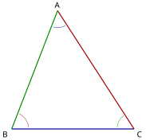
查看 TikZ 原始碼
\begin{document}
\begin{tikzpicture}[scale=1.5]
\coordinate (B) at (0,0);
\coordinate (C) at (3.6,0);
\coordinate (A) at (1.35,3.5);
\draw[blue!65!black, very thick] (B) -- (C);
\draw[red!65!black, very thick] (C) -- (A);
\draw[green!55!black, very thick] (A) -- (B);
\draw[blue!65!black] (A) ++(255:0.5) arc (255:297:0.5);
\draw[red!65!black] (B) ++(6:0.5) arc (6:64:0.5);
\draw[green!55!black] (C) ++(127:0.5) arc (127:175:0.5);
\node[black, above] at (A) {$A$};
\node[black, below left] at (B) {$B$};
\node[black, below right] at (C) {$C$};
\end{tikzpicture}
\end{document}对任意三角形 $\triangle ABC$（记号沿用图 32-1）， $$\frac{BC}{\sin\angle BAC}=\frac{CA}{\sin\angle CBA}=\frac{AB}{\sin\angle ACB}.$$
三边与三对角的搭配如图 32-8 所示。
图 32-8：同色的一边与它的对角相对：边 $BC$（蓝）对 $\angle BAC$，边 $CA$（红）对 $\angle CBA$，边 $AB$（绿）对 $\angle ACB$。
设 $\triangle ABC$ 的面积为 $S$。在三个顶点处各用一次 SAS 面积公式：
$$\begin{aligned} S &= \frac12AB\cdot CA\cdot\sin\angle BAC,\\ S &= \frac12AB\cdot BC\cdot\sin\angle CBA,\\ S &= \frac12BC\cdot CA\cdot\sin\angle ACB. \end{aligned}$$
三式同除以正数 $\frac12AB\cdot BC\cdot CA$：
$$\frac{\sin\angle BAC}{BC}=\frac{\sin\angle CBA}{CA}=\frac{\sin\angle ACB}{AB}.$$
三个比值均非零（$\theta\in(0^{\circ},180^{\circ})$ 时 $\sin\theta>0$），逐一取倒数，即得 $$\frac{BC}{\sin\angle BAC}=\frac{CA}{\sin\angle CBA}=\frac{AB}{\sin\angle ACB}.$$
查看 TikZ 原始碼
\begin{document}
\begin{tikzpicture}[scale=1.5]
\coordinate (O) at (0,0);
\coordinate (A) at (0.174,1.992);
\coordinate (B) at (-1.147,-1.638);
\coordinate (C) at (1.732,-1);
\coordinate (M) at (0.293,-1.319);
\draw (O) circle (2);
\draw[very thick] (B) -- (C);
\draw (A) -- (B);
\draw (A) -- (C);
\draw[dashed] (O) -- (B);
\draw[dashed] (O) -- (C);
\draw[dashed] (O) -- (M);
\draw (0.2449,-1.1044) -- (0.0302,-1.152) -- (0.0778,-1.3668);
\draw (A) ++(255:0.45) arc (255:293:0.45);
\node[right] at (0.226,1.244) {$\theta$};
\draw (O) ++(245:0.55) arc (245:325:0.55);
\node[right] at (0.30,-0.80) {$2\theta$};
\fill (O) circle (1.2pt) node[below left] {$O$};
\node[above right] at (A) {$A$};
\node[below left] at (B) {$B$};
\node[below right] at (C) {$C$};
\node[below right] at (0.358,-1.612) {$M$};
\end{tikzpicture}
\end{document}对任意三角形 $\triangle ABC$，设 $R$ 为其外接圆半径，则 $$\frac{BC}{\sin\angle BAC}=\frac{CA}{\sin\angle CBA}=\frac{AB}{\sin\angle ACB}=2R.$$
证明中用到的外接圆与圆心角如图 32-9 所示。
图 32-9：$\triangle ABC$ 的外接圆（圆心 $O$、半径 $R$）；圆周角 $\theta=\angle BAC$ 与它所对弧的圆心角 $2\theta=\angle BOC$。
只须证三个比值中的任意一个等于 $2R$，其余同理。设 $\theta=\angle BAC$，由 §29.1.1 与 §29.3.2，不共线三点 $A$、$B$、$C$ 有唯一的外接圆 $C(O,R)$（$O$ 即外心）。
情形一（$\theta=90^{\circ}$）： 此时 $BC$ 是外接圆的直径（§29.1.2），即 $BC=2R$，而 $\sin 90^{\circ}=1$，故 $\dfrac{BC}{\sin\angle BAC}=2R$。
情形二（$\theta<90^{\circ}$）： $\angle BAC$ 所对的弧（不含 $A$）为劣弧，其圆心角 $\varphi=\angle BOC=2\theta\le 180^{\circ}$（圆心角定理，§29.1.2）。由「圆心至弦的垂线平分该弦」（§29.1.1），作垂线交 $BC$ 于中点 $M$；在等腰 $\triangle OBC$（$OB=OC=R$）中三线合一，$\angle MOB=\frac{\varphi}{2}$。在直角三角形 $\triangle OMB$ 中（§9.1.2），
$$BM=R\sin\frac{\varphi}{2}=R\sin\theta,$$
故 $BC=2BM=2R\sin\angle BAC$。
情形三（$\theta>90^{\circ}$）： 取弦 $BC$ 另一侧圆周上一点 $P$（在优弧上）。此时弧 $\widehat{BC}$ 中不含 $A$ 的那段为优弧，其圆心角为反角 $360^{\circ}-\varphi$，由圆心角定理 $2\theta=360^{\circ}-\varphi$；而 $P$ 所对的弧（不含 $P$）为劣弧，$\angle BPC=\frac{\varphi}{2}=180^{\circ}-\theta$。由情形二，$BC=2R\sin\angle BPC$，再由 §26.2.5 的化锐角公式 $\sin(180^{\circ}-\theta)=\sin\theta$，得
$$BC=2R\sin(180^{\circ}-\theta)=2R\sin\theta.$$
三个比值逐一用上式即得链式结论。
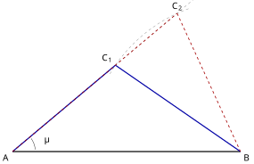
查看 TikZ 原始碼
\begin{document}
\begin{tikzpicture}[scale=1.5]
\coordinate (A) at (0,0);
\coordinate (B) at (6,0);
\coordinate (C1) at (2.708,2.272);
\coordinate (C2) at (4.333,3.636);
\draw[dashed, gray] (B) ++(110:4) arc (110:150:4);
\draw[dashed, gray] (A) -- (4.75,3.99);
\draw[very thick] (A) -- (B);
\draw[blue!65!black, very thick] (A) -- (C1);
\draw[blue!65!black, very thick] (C1) -- (B);
\draw[red!65!black, thick, dashed] (A) -- (C2);
\draw[red!65!black, thick, dashed] (C2) -- (B);
\draw (A) ++(5:0.6) arc (5:35:0.6);
\node at (0.893,0.325) {$\theta$};
\node[below left] at (A) {$A$};
\node[below right] at (B) {$B$};
\node[above left] at (C1) {$C_1$};
\node[above] at (C2) {$C_2$};
\end{tikzpicture}
\end{document}当已知数据是「两边与其中一边的对角」（SSA）时，正弦公式只给出未知角的正弦值，而 $\sin\varphi=\sin(180^{\circ}-\varphi)$，故解得的角与它的补角都是候选；两个候选都要检验。
判定口诀：设已知对角为 $\theta$、其对边为 $a$、另一已知边为 $c$，则 $a\ge c$ 时解唯一；其余按 $a$ 与 $c\sin\theta$ 比较，$a<c\sin\theta$ 时无解，$a=c\sin\theta$ 时恰一解（对角为直角），$c\sin\theta<a<c$ 时有两解。两解情形如图 32-10 所示。
图 32-10：给定的 $\theta$ 与两边之下，$C$ 可以落在两个位置。
蓝（实线）与红（虚线）两支都拥有同长的 $AB$、同长的 $BC=C_1B=C_2B$ 与同角 $\theta=\angle BAC$。
查看 TikZ 原始碼
\begin{document}
\begin{tikzpicture}[scale=1.5]
\coordinate (B) at (0,0);
\coordinate (C) at (3.2,0);
\coordinate (A) at (1.168,4.358);
\draw[very thick] (B) -- (C) -- cycle;
\draw[dashed] (B) -- (A);
\draw[dashed] (A) -- (C);
\draw (A) ++(260:0.5) arc (260:290:0.5);
\node at (1.238,3.561) {$40^{\circ}$};
\draw (C) ++(122:0.5) arc (122:174:0.5);
\node at (2.484,0.455) {$65^{\circ}$};
\node[above] at (A) {$A$};
\node[below left] at (B) {$B$};
\node[below right] at (C) {$C$};
\node[below] at (1.6,-0.28) {$BC = 8$};
\end{tikzpicture}
\end{document}在 $\triangle ABC$ 中，$\angle BAC=40^{\circ}$、$\angle ACB=65^{\circ}$、$BC=8\text{cm}$。求 $\angle CBA$、$CA$ 与 $AB$（长度答案保留三位有效数字）。
三角形如图 32-11 所示。
图 32-11：示例 3 的构型；两未知边按虚线处理。
先由内角和（§8.2）：$\angle CBA=180^{\circ}-40^{\circ}-65^{\circ}=75^{\circ}$。
再由正弦公式（每个比值都用 $BC$ 那条）：
$$\begin{aligned} CA &= \frac{BC\sin\angle CBA}{\sin\angle BAC}=\frac{8\sin 75^{\circ}}{\sin 40^{\circ}}\approx 12.0\text{cm},\\ AB &= \frac{BC\sin\angle ACB}{\sin\angle BAC}=\frac{8\sin 65^{\circ}}{\sin 40^{\circ}}\approx 11.3\text{cm}. \end{aligned}$$
本题数据给出两个已知角，三角形唯一；若数据是 SSA，先按警告框的判定口诀列出解况再动手。
32.1.4 希罗公式（Heron's Formula）
最后一件工具处理相反的问题：三边都在手上、任何一个角都未知。此时面积公式与余弦公式都要先算一个角才能起步，希罗（Heron）公式把这一步省掉，让面积从三边直接写出。
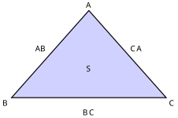
查看 TikZ 原始碼
\begin{document}
\begin{tikzpicture}[scale=1.5]
\coordinate (A) at (0.4,2.6);
\coordinate (B) at (-1.9,0);
\coordinate (C) at (2.7,0);
\fill[blue, opacity=0.18] (A) -- (B) -- (C) -- cycle;
\draw[very thick] (A) -- (B) -- (C) -- cycle;
\node[above] at (A) {$A$};
\node[below left] at (B) {$B$};
\node[below right] at (C) {$C$};
\node[above left] at (-0.75,1.3) {$AB$};
\node[below] at (0.4,-0.28) {$BC$};
\node[above right] at (1.55,1.3) {$CA$};
\node at (0.4,0.866) {$S$};
\end{tikzpicture}
\end{document}设 $\triangle ABC$ 的三边 $AB$、$BC$、$CA$ 已知，记其周长 $$p=AB+BC+CA,$$ 则其面积 $$S=\frac14\sqrt{p(p-2AB)(p-2BC)(p-2CA)}.$$
三边已知、角度未知的构型如图 32-12 所示。
图 32-12：希罗公式的输入只有三边；三个角都不是已知量（图中以色块标出待算的面积）。
证明只动用代数：先由 SAS 面积公式把
设 $\triangle ABC$ 中 $\theta=\angle BAC$（$0^{\circ}<\theta<180^{\circ}$），$p=AB+BC+CA$。由 SAS 面积公式与平方和恒等式（§9.2.1）：
$$\begin{aligned} 4S^{2} &= (AB\cdot CA)^{2}\sin^{2}\theta\\ &= (AB\cdot CA)^{2}\left(1-\cos^{2}\theta\right)\\ &= (AB\cdot CA)^{2}-\left(AB\cdot CA\cdot\cos\theta\right)^{2}. \end{aligned}$$
由余弦公式（§32.1.2）移项，$2AB\cdot CA\cos\theta=AB^{2}+CA^{2}-BC^{2}$；两边乘 $4$，再用平方差分解：
$$\begin{aligned} 16S^{2} &= 4(AB\cdot CA)^{2}-\left(AB^{2}+CA^{2}-BC^{2}\right)^{2}\\ &= \left(2AB\cdot CA+AB^{2}+CA^{2}-BC^{2}\right)\left(2AB\cdot CA-AB^{2}-CA^{2}+BC^{2}\right)\\ &= \left((AB+CA)^{2}-BC^{2}\right)\left(BC^{2}-(AB-CA)^{2}\right)\\ &= (AB+CA-BC)(AB+CA+BC)(BC+AB-CA)(BC-AB+CA)\\ &= p(p-2BC)(p-2CA)(p-2AB). \end{aligned}$$
由三角形不等式（§8.7），三边满足 $AB+CA>BC$、$AB+BC>CA$、$BC+CA>AB$，故右端四个因式全为正。又 $S>0$，对 $16S^{2}$ 开算术平方根得
$$\begin{aligned} 4S &= \sqrt{p(p-2AB)(p-2BC)(p-2CA)},\\ S &= \frac14\sqrt{p(p-2AB)(p-2BC)(p-2CA)}. \end{aligned}$$
从希罗公式得到的面积总可以写成「根号下四项相乘」的精确根式；特殊边长会把根号内开得尽（如三边 $13$、$14$、$15$ 时 $S=84$），一般情形保留根号形式即可。需要三位有效数字时，用计算器在最后一步换算。题面若只给三边而求面积，预期答案即是这样的根式（或能开尽时的整数）。
查看 TikZ 原始碼
\begin{document}
\begin{tikzpicture}[scale=1.5]
\coordinate (B) at (0,0);
\coordinate (C) at (4.9,0);
\coordinate (A) at (1.75,4.2);
\draw[very thick] (A) -- (B) -- (C) -- cycle;
\node[above] at (A) {$A$};
\node[below left] at (B) {$B$};
\node[below right] at (C) {$C$};
\node[above left] at (0.875,2.1) {$AB = 13$};
\node[below] at (2.45,-0.28) {$BC = 14$};
\node[above right] at (3.325,2.1) {$CA = 15$};
\end{tikzpicture}
\end{document}求三边为 $13\text{cm}$、$14\text{cm}$、$15\text{cm}$ 的三角形的面积（答案以根式或整数表示均可）。
三角形如图 32-13 所示。
图 32-13：示例 4 的构型，三边以厘米计。
记 $AB=13$、$BC=14$、$CA=15$，则周长 $p=13+14+15=42$。由希罗公式：
$$\begin{aligned} S &= \frac14\sqrt{42(42-26)(42-28)(42-30)}\\ &= \frac14\sqrt{42\cdot 16\cdot 14\cdot 12}\\ &= \frac14\sqrt{112896}\\ &= \frac14\times 336\\ &= 84\text{cm}^{2}. \end{aligned}$$
32.2 直线与平面 (Lines and Planes)
本节难度上限：T B- ｜ C B ｜ E B- ｜ Q B-
本节沿「垂直 → 投影 → 距离 → 角度」的顺序建立三维空间的基本判定与度量。多条关系在初中已用直观认识过（立体的高、直线与平面垂直的判别条件），本章把它们编进同一条定义链条，让每一个结论都有可核查的证明或明确的直观交代；主线里两处「遵从直觉」的说法（垂线存在唯一、直线投影仍是直线）另有完整证明，集中在 §32.2.8 拓展阅读。
32.2.1 点在平面上的投影与立体的高 (Projection of a Point onto a Plane)
进入空间之前，先把语言钉死：
- 平面记作
- 空间两点
- 直线与平面、点与平面的位置关系，一律按公共点的多少来谈论。
本节做一件事：把「垂直」从平面几何的线线垂直扩展到线面垂直，再顺着垂线依次立起三样东西：垂线段、投影、距离。立体的高正是它们的实例。
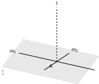
查看 TikZ 原始碼
\begin{document}
\begin{tikzpicture}[scale=1.5]
\coordinate (a1) at (-0.6,0.7);
\coordinate (a2) at (3.0,-0.1);
\coordinate (a3) at (4.0,1.2);
\coordinate (a4) at (0.4,2.0);
\draw[fill=gray,opacity=0.18] (a1) -- (a2) -- (a3) -- (a4) -- cycle;
\coordinate (A) at (2.0,0.95);
\coordinate (P) at (2.0,3.5);
\draw[dashed,very thick] (A) -- (P);
\draw[very thick] (0.2,1.35) -- (3.8,0.55);
\draw[very thick] (2.6,1.35) -- (1.4,0.55);
\node[above] at (2.0,3.54) {$l$};
\node[left] at (0.15,1.4) {$m_1$};
\node[above right] at (2.62,1.32) {$m_2$};
\node[below left] at (1.9,0.9) {$A$};
\node[below] at (-0.55,0.62) {$\Pi$};
\end{tikzpicture}
\end{document}设直线 $l$ 与平面 $\Pi$ 相交于点 $A$。若 $l$ 与 $\Pi$ 内每一条过 $A$ 的直线都垂直，则称 $l$ 垂直于 $\Pi$，记作 $l \perp \Pi$；交点 $A$ 称为垂足（foot of the perpendicular）。
这里的「垂直」没有引入新东西，用的就是 Ch8 的线线垂直概念，只是要求一对多地全部成立。
设 $m_1$、$m_2$ 为 $\Pi$ 内两条过 $A$ 的直线，$l$ 与二者皆垂直的情形如图 32-14 所示。
图 32-14：直线垂直于平面的定义。垂线 $l$ 与 $\Pi$ 内过垂足 $A$ 的每一条直线（图中 $m_1$、$m_2$）都垂直。
此定义只动用了线线垂直与「过 $A$」这一限制；平面内不过 $A$ 的直线是否也被 $l$ 垂直，将由下文的三维毕氏引理以毕氏展开的方式补齐。
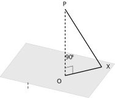
查看 TikZ 原始碼
\begin{document}
\begin{tikzpicture}[scale=1.5]
\coordinate (a1) at (-0.6,0.9);
\coordinate (a2) at (2.8,0.1);
\coordinate (a3) at (3.8,1.4);
\coordinate (a4) at (0.4,2.2);
\draw[fill=gray,opacity=0.18] (a1) -- (a2) -- (a3) -- (a4) -- cycle;
\coordinate (O) at (1.9,0.95);
\coordinate (X) at (3.3,1.28);
\coordinate (P) at (1.9,3.5);
\draw[dashed,very thick] (O) -- (P);
\draw[very thick] (O) -- (X);
\draw[very thick] (P) -- (X);
\coordinate (q1) at (2.192,1.019); % O + 0.3*(0.9733,0.2293)
\coordinate (q2) at (2.192,1.319); % q1 + 0.3*(0,1)
\coordinate (q3) at (1.9,1.25); % O + 0.3*(0,1)
\draw (q3) -- (q2) -- (q1);
\node[above] at (1.9,3.54) {$P$};
\node[below left] at (1.85,0.9) {$O$};
\node[right] at (3.4,1.3) {$X$};
\node[below] at (0.5,0.75) {$\Pi$};
\node[above] at (2.08,1.5) {$90^\circ$};
\end{tikzpicture}
\end{document}设 $PO \perp \Pi$ 于 $O$（即 $O$ 为垂足）。则对 $\Pi$ 内每一点 $X$：
$$PX^2 = PO^2 + OX^2$$
特别地，$PO$ 是 $P$ 与 $\Pi$ 内所有点连出的最短线段（垂线段最短）。构图如图 32-15 所示。
图 32-15：三维毕氏引理。$PO$ 垂直于 $\Pi$，故 $PO \perp OX$，直角三角形 $POX$ 的毕氏展开除全部斜距外还给出垂线段最短。
对 $\Pi$ 内每一点 $X$，两点 $O$、$X$ 同在 $\Pi$ 内，故整个直线 $OX$ 落在 $\Pi$ 内且经过 $O$。按直线与平面垂直的定义，$PO \perp$ 直线 $OX$，即三角形 $POX$ 在 $O$ 处是直角三角形。由毕氏定理（Ch8 §8.5）：
$$PX^2 = PO^2 + OX^2$$
又 $OX \geq 0$ 且等号成立当且仅当 $X = O$，故 $PX \geq PO$，等号当且仅当 $X = O$。这就是垂线段最短：从点 $P$ 到平面 $\Pi$ 内各点的所有连线中，垂线段最短。
设 $P$ 为空间一点、$\Pi$ 为平面。$P$ 在 $\Pi$ 上的投影（projection）按两种情形规定：
- 若 $P \in \Pi$，投影就是 $P$ 自身；
- 若 $P \notin \Pi$，投影是从 $P$ 向 $\Pi$ 所作垂线的垂足。
过一点向平面作垂线，存在且唯一，遵从直觉（与平面内过线外一点的垂线唯一属于同一层级的直观事实）。
设 $O$ 为点 $P$ 在平面 $\Pi$ 上的投影。$P$ 到 $\Pi$ 的距离记作 $d(P, \Pi)$，定义为投影线段的长 $d(P, \Pi) = PO$。
由垂线段最短，这一数字恰是 $P$ 与 $\Pi$ 内所有点连出的线段中的最短者。
Ch10 中锥体的「高」正是这一定义的实例：锥顶到底面所在平面的距离，即顶点到底面平面的投影所连的线段长度（如图 32-16 所示）。
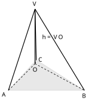
查看 TikZ 原始碼
\begin{document}
\begin{tikzpicture}[scale=1.5]
\coordinate (A) at (0,0);
\coordinate (B) at (3.0,0);
\coordinate (C) at (1.1,1.2);
\coordinate (V) at (1.05,3.2);
\coordinate (O) at (1.05,1.05);
\draw[fill=gray,opacity=0.18] (A) -- (B) -- (C) -- cycle;
\draw[very thick] (V) -- (O);
\draw[dashed,thick] (O) -- (A);
\draw[dashed,thick] (O) -- (B);
\draw[dashed,thick] (O) -- (C);
\draw[very thick] (V) -- (A);
\draw[very thick] (V) -- (B);
\draw[very thick] (V) -- (C);
\node[below left] at (0,0) {$A$};
\node[below] at (3.0,-0.05) {$B$};
\node[above right] at (1.1,1.05) {$C$};
\node[above] at (1.05,3.24) {$V$};
\node[below] at (1.05,0.98) {$O$};
\node[right] at (1.25,2.1) {$h = VO$};
\end{tikzpicture}
\end{document}图 32-16：锥体的高。
垂直于底面所在平面， 为顶点 在底面上的投影； 即顶点到底面平面的距离。
设 $PO \perp \Pi$ 于 $O$。对 $\Pi$ 内每一点 $X$：
$$PX \geq PO$$
等号成立当且仅当 $X = O$；故从点 $P$ 到平面 $\Pi$ 的最短连线就是垂线段 $\overline{PO}$，且取得这一最短值的点唯一。设定如图 32-17 所示。
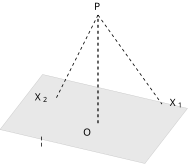
查看 TikZ 原始碼
\begin{document}
\begin{tikzpicture}[scale=1.5]
\coordinate (a1) at (-0.6,0.8);
\coordinate (a2) at (2.8,0.0);
\coordinate (a3) at (3.8,1.3);
\coordinate (a4) at (0.4,2.1);
\draw[fill=gray,opacity=0.18] (a1) -- (a2) -- (a3) -- (a4) -- cycle;
\coordinate (O) at (1.7,0.95);
\coordinate (P) at (1.7,3.5);
\coordinate (X1) at (3.2,1.4);
\coordinate (X2) at (0.7,1.5);
\draw[dashed,very thick] (O) -- (P);
\draw[dashed,thick] (P) -- (X1);
\draw[dashed,thick] (P) -- (X2);
\node[above] at (1.7,3.54) {$P$};
\node[below left] at (1.62,0.9) {$O$};
\node[right] at (3.3,1.42) {$X_1$};
\node[left] at (0.6,1.55) {$X_2$};
\node[below] at (0.4,0.7) {$\Pi$};
\end{tikzpicture}
\end{document}由三维毕氏引理，$PX^2 = PO^2 + OX^2 \geq PO^2$，开平方即得；等号当且仅当 $OX = 0$，即 $X = O$。比较直观见图 32-17。
图 32-17：垂线段最短。从点 $P$ 到 $\Pi$ 内各点的连线中，垂线段 $\overline{PO}$ 最短；$X_1$、$X_2$ 为 $\Pi$ 内任意两点，均有 $PX_i \geq PO$。
32.2.2 垂直的判据与投影刻画 (A Criterion for Perpendicularity and the Projection Characterization)
§32.2.1 已把「垂直」按定义展开成三维毕氏引理。定义要求「与平面内所有过垂足的直线垂直」，逐条验证的代价高；本节先给一条只需两条直线就够的判据，再给出垂直与投影互相换读的刻划，两者合起来把「竖线」这件事讲透。
设直线 $l$ 与平面 $\Pi$ 相交于点 $A$，$m_1$、$m_2$ 是 $\Pi$ 内两条过 $A$ 且相交于 $A$ 的直线。则
$$l\perp m_1 \text{ 且 } l\perp m_2 \iff l\perp\Pi$$
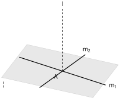
查看 TikZ 原始碼
\begin{document}
\begin{tikzpicture}[scale=1.5]
\coordinate (a1) at (-0.6,0.7);
\coordinate (a2) at (3.0,-0.1);
\coordinate (a3) at (4.0,1.2);
\coordinate (a4) at (0.4,2.0);
\draw[fill=gray,opacity=0.18] (a1) -- (a2) -- (a3) -- (a4) -- cycle;
\coordinate (A) at (1.8,0.95);
\coordinate (Pl) at (1.8,3.4);
\draw[very thick] (0.1,1.5) -- (3.5,0.4);
\draw[very thick] (2.7,1.6) -- (0.9,0.3);
\draw[dashed,very thick] (A) -- (Pl);
\node[above] at (1.8,3.44) {$l$};
\node[below left] at (1.72,0.9) {$A$};
\node[right] at (3.55,0.35) {$m_1$};
\node[above] at (2.75,1.62) {$m_2$};
\node[below] at (-0.5,0.6) {$\Pi$};
\end{tikzpicture}
\end{document}这一判据在初中阶段我们已经认识：在处理立体图形的过程中，我们事实上默认了它的正确性，这些性质确实是很显然的。它的完整证明超出常规课程的要求，这里仅作拓展阅读处理，不必深读；本章直接采用该判据，不重给证明。
判据的价值是把「与无穷多条直线垂直」的验证压缩成「与两条相交直线垂直」。设 $m_1$、$m_2$ 过垂足 $A$ 且相交，图 32-18 画出判据的构型。
图 32-18：垂直判据的构型。$l$ 只要垂直于 $\Pi$ 内过 $A$ 的两条相交直线 $m_1$、$m_2$，就垂直于整个平面。
设直线 $l$ 与平面 $\Pi$ 相交于点 $A$。则
$$l\perp\Pi \iff l \text{ 上每一点在 } \Pi \text{ 上的投影都是 } A$$
先看 $l\perp\Pi$ 推出 $l$ 上每一点的投影都是 $A$。 设 $P\in l$ 且 $P\neq A$；任取 $X\in\Pi$、$X\neq A$。直线 $AX$ 落在 $\Pi$ 内且过 $A$，由垂直的定义，$PA\perp AX$，故三角形 $PAX$ 在 $A$ 处直角，毕氏定理给出
$$PX^2 = PA^2 + AX^2 > PA^2$$
即 $P$ 到 $\Pi$ 内各点的连线长以 $PA$ 为严格最小，最小点唯一（§32.2.1），所以 $P$ 在 $\Pi$ 上的投影是 $A$；点 $A$ 本身在 $\Pi$ 内，按约定投影为它自己。
再看 $l$ 上每一点的投影都是 $A$ 推出 $l\perp\Pi$。 按定义须证：$\Pi$ 内每一条过 $A$ 的直线 $m$ 都与 $l$ 垂直。任取 $m$，在 $m$ 上取关于 $A$ 对称的两点 $X_1$、$X_2$（$A$ 为 $X_1X_2$ 的中点），记 $AX_1 = AX_2 = t$；再取 $P\in l$、$P\neq A$，设 $\angle PAX_1 = \theta$，则射线 $AX_2$ 与 $AX_1$ 反向，$\angle PAX_2 = 180^\circ - \theta$，从而 $\cos\angle PAX_2 = -\cos\theta$。对两个三角形分别用余弦公式（§32.1.2）：
$$\begin{aligned} PX_1^2 &= PA^2 + t^2 - 2PA\cdot t\cos\theta \\ PX_2^2 &= PA^2 + t^2 + 2PA\cdot t\cos\theta \end{aligned}$$
若 $\cos\theta > 0$，取 $t < 2PA\cos\theta$，则第一式右端小于 $PA^2$，得 $PX_1 < PA$；若 $\cos\theta < 0$，同法由第二式得 $PX_2 < PA$。两种情形都意味着：只要 $\theta \neq 90^\circ$，就存在 $\Pi$ 内的点比 $A$ 更靠近 $P$，与「$P$ 的投影是 $A$（$PA$ 最短）」矛盾。故必有 $\cos\theta = 0$，即 $\theta = 90^\circ$，$l\perp m$。$m$ 是 $\Pi$ 内过 $A$ 的任意直线，按定义即 $l\perp\Pi$。
两个方向各自闭合，刻划成立。
32.2.3 直线在平面上的投影 (Projection of a Line onto a Plane)
§32.2.1 把「投影」安在了单个点上。现在把整条直线上的点一并投下去：先定义这个投影集，再直接叙述它的形状；第三种情形的「投影仍是一条直线」是下一小节定义线面角的支点。
若直线 $l$ 与平面 $\Pi$ 没有公共点，则称 $l$ 平行于 $\Pi$，记作 $l\parallel\Pi$。这一关系在初中看长方体时已直观认识：例如棱 $A'B'$ 与底面 $ABCD$ 所在平面，怎样延长都不相遇。
给定平面 $\Pi$ 与直线 $l$。把 $l$ 上每一点在 $\Pi$ 上的投影逐点取出，这些投影组成的集合称为直线 $l$ 在平面 $\Pi$ 上的投影（projection），记作 $l'$。
投影形状的直接叙述（本节按空间直观接受，不立定理；证明集中在 §32.2.8 拓展阅读）。
| 投影 |
|
|---|---|
| 直线 |
|
| 一点，即 |
|
| 一条直线 |
情形一中，
查看 TikZ 原始碼
\begin{document}
\begin{tikzpicture}[scale=1.5]
\fill[blue,opacity=0.18] (0,0) -- (6,0) -- (7.08,0.6) -- (1.08,0.6) -- cycle;
\draw[gray!60] (0,0) -- (6,0) -- (7.08,0.6) -- (1.08,0.6) -- cycle;
\draw[blue!65!black,very thick] (1.21,0.23) -- (5.61,0.23);
\node at (3.41,0.5) {$l$};
\node at (7.35,0.82) {$\Pi$};
\end{tikzpicture}
\end{document}图 32-19：直线完全躺在平面内的情形。
， 上每点都落在 内，该点的投影仍是该点，故整条直线的投影就是 本身。
情形二中，
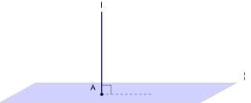
查看 TikZ 原始碼
\begin{document}
\begin{tikzpicture}[scale=1.5]
\fill[blue,opacity=0.18] (0,0) -- (6,0) -- (7.08,0.6) -- (1.08,0.6) -- cycle;
\draw[gray!60] (0,0) -- (6,0) -- (7.08,0.6) -- (1.08,0.6) -- cycle;
\draw[dashed] (3.05,0.25) -- (4.55,0.25);
\draw[blue!65!black,very thick] (3.05,0.25) -- (3.05,2.75);
\draw (3.33,0.25) -- (3.33,0.53) -- (3.05,0.53);
\fill (3.05,0.25) circle (1.3pt);
\node at (3.05,2.95) {$l$};
\node at (2.8,0.46) {$A$};
\node at (7.35,0.82) {$\Pi$};
\end{tikzpicture}
\end{document}图 32-20：直线垂直立起的情形。
，交点为 ； 上任一点的垂线都与 重合，垂足全是 ，故整条直线的投影缩成一点 。
情形三中，其余情形（斜交，或平行而不在
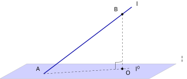
查看 TikZ 原始碼
\begin{document}
\begin{tikzpicture}[scale=1.5]
\fill[blue,opacity=0.18] (0,0) -- (6,0) -- (7.08,0.6) -- (1.08,0.6) -- cycle;
\draw[gray!60] (0,0) -- (6,0) -- (7.08,0.6) -- (1.08,0.6) -- cycle;
\draw[blue!65!black,very thick] (1.76,0.2) -- (5.3,2.89);
\draw[dashed] (4.92,2.6) -- (4.92,0.4);
\draw[dashed] (1.76,0.2) -- (5.27,0.42);
\draw (4.92,0.68) -- (4.64,0.66) -- (4.64,0.38);
\fill (4.92,2.6) circle (1.3pt);
\fill (4.92,0.4) circle (1.3pt);
\node at (5.52,3.02) {$l$};
\node at (4.68,2.8) {$B$};
\node at (1.54,0.4) {$A$};
\node at (5.15,0.24) {$O$};
\node at (5.52,0.4) {$l'$};
\node at (7.35,0.82) {$\Pi$};
\end{tikzpicture}
\end{document}图 32-21：直线斜交于平面的情形。
交 于 ， 为 上任一点， 是 到 的垂足；虚线直线 就是 在 上的投影 。
「逐点投下去仍排成一条直线」的直观道理是：直线是一串紧挨着的点，投到
32.2.4 线面角 (Angle between a Line and a Plane)
空间中最常用的一种角是斜线与平面所成的角，它量出一条直线在空间里的倾斜程度。斜线上的点有无穷多个，但斜线「压」到平面上的一条参考线是唯一的，角度的定义就安在这条参考线上。
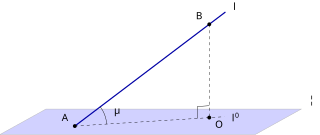
查看 TikZ 原始碼
\begin{document}
\begin{tikzpicture}[scale=1.5]
\fill[blue,opacity=0.18] (0,0) -- (6,0) -- (7.08,0.6) -- (1.08,0.6) -- cycle;
\draw[gray!60] (0,0) -- (6,0) -- (7.08,0.6) -- (1.08,0.6) -- cycle;
\draw[blue!65!black,very thick] (1.76,0.2) -- (5.3,2.89);
\draw[dashed] (4.92,2.6) -- (4.92,0.4);
\draw[dashed] (1.76,0.2) -- (5.27,0.42);
\draw (4.92,0.68) -- (4.64,0.66) -- (4.64,0.38);
\draw (1.76,0.2) ++(3.6:0.75) arc[start angle=3.6, end angle=37.2, radius=0.75];
\fill (4.92,2.6) circle (1.3pt);
\fill (1.76,0.2) circle (1.3pt);
\fill (4.92,0.4) circle (1.3pt);
\node at (5.52,3.02) {$l$};
\node at (4.7,2.8) {$B$};
\node at (1.54,0.4) {$A$};
\node at (5.15,0.24) {$O$};
\node at (5.52,0.4) {$l'$};
\node at (7.35,0.82) {$\Pi$};
\node at (2.74,0.57) {$\theta$};
\end{tikzpicture}
\end{document}与平面 $\Pi$ 相交但不垂直的直线称为 $\Pi$ 的斜线（oblique line）；斜线与 $\Pi$ 的交点称为斜足（oblique foot）。
设 $l$ 是 $\Pi$ 的斜线，斜足为 $A$；取 $B$ 为 $l$ 上异于 $A$ 的任一点，作 $BO\perp\Pi$，垂足为 $O$。由 $l$ 不垂直于 $\Pi$ 知 $O\ne A$。
$A$ 在 $\Pi$ 内，它的投影是它自己；$B$ 的投影是 $O$；而斜交直线的投影是一条直线（§32.2.3），故 $l$ 在 $\Pi$ 上的投影是直线 $AO$。斜线与平面所成的角称为线面角，定义为斜线与其投影直线所成的角
$$\theta=\angle BAO$$
$\theta$ 取值在 $0^{\circ}$ 与 $90^{\circ}$ 之间（下文的刻划定理把它说成直角三角形 $AOB$ 的一个锐角）。
另两种位置关系补全取值范围：
- 若 $l\perp\Pi$，投影缩为一点，规定线面角为 $90^{\circ}$；
- 若 $l\subset\Pi$ 或 $l\parallel\Pi$，投影与 $l$ 重合或平行，规定线面角为 $0^{\circ}$。
把平面想成水平的桌面：垂直刺入桌面的直线「最陡」，取 $90^{\circ}$；躺在桌面或与桌面平行的直线「最平」，取 $0^{\circ}$；两个极端值沿倾斜程度连续转动的直观安排，遵从直觉接受。
定义中的构型如图 32-22 所示。
图 32-22：斜线与线面角。
$l$ 交 $\Pi$ 于斜足 $A$，$B$ 为 $l$ 上一点，$O$ 是 $B$ 的垂足；虚线直线 $AO$ 是 $l$ 的投影，线面角 $\theta=\angle BAO$ 取值在 $0^{\circ}$ 与 $90^{\circ}$ 之间。
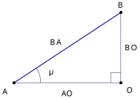
查看 TikZ 原始碼
\begin{document}
\begin{tikzpicture}[scale=1.5]
\draw[blue!65!black,line width=1pt] (0,0) -- (3.2,2.1);
\draw[blue!65!black] (0,0) -- (3.2,0) -- (3.2,2.1);
\draw (2.9,0) -- (2.9,0.3) -- (3.2,0.3);
\draw (0,0) ++(0:0.8) arc[start angle=0, end angle=33.3, radius=0.8];
\fill (0,0) circle (1.3pt);
\fill (3.2,0) circle (1.3pt);
\fill (3.2,2.1) circle (1.3pt);
\node at (-0.26,-0.26) {$A$};
\node at (3.46,-0.22) {$O$};
\node at (3.2,2.32) {$B$};
\node at (1.26,1.21) {$BA$};
\node at (3.5,1.05) {$BO$};
\node at (1.6,-0.32) {$AO$};
\node at (1.1,0.33) {$\theta$};
\end{tikzpicture}
\end{document}设直线 $l$ 与平面 $\Pi$ 相交于 $A$ 且 $l$ 不垂直于 $\Pi$，$B$ 为 $l$ 上异于 $A$ 的任一点，$O$ 为 $B$ 在 $\Pi$ 上的投影。则 $l$ 在 $\Pi$ 上的投影是直线 $AO$；记线面角为 $\theta$，则 $\theta=\angle BAO$，且
$$\begin{aligned} \sin\theta &= \frac{BO}{BA}\\ \cos\theta &= \frac{AO}{BA} \end{aligned}$$
定理所说的直角三角形 $AOB$ 如图 32-23 所示。
图 32-23：线面角的直角三角形刻划。
$\angle AOB=90^{\circ}$，斜边是 $BA$；$\theta$ 的对边是 $BO$，邻边是 $AO$。
设直线 $l$ 交 $\Pi$ 于 $A$，$l$ 不垂直于 $\Pi$，$B\in l$，$B\ne A$，$O$ 为 $B$ 在 $\Pi$ 上的投影，$\theta$ 为 $l$ 与 $\Pi$ 的线面角。
$O$ 是 $B$ 在 $\Pi$ 上的投影，故 $BO\perp\Pi$（投影即垂足，§32.2.1）。$A$、$O$ 都在 $\Pi$ 内，故直线 $AO$ 整条落在 $\Pi$ 内，于是 $BO\perp AO$（垂直于 $\Pi$ 的直线垂直于 $\Pi$ 内过垂足的每条直线，§32.2.2），即 $\angle AOB=90^{\circ}$，斜边为 $BA$。三边满足毕氏定理（这也正是 §32.2.1 三维毕氏引理取 $X=A$ 的结论）：
$$BA^2=BO^2+AO^2$$
又 $A$ 在 $\Pi$ 内、投影是它自身，$B\in l$ 的投影是 $O$，由 §32.2.3 情形三，$l$ 的投影是过 $A$ 的一条直线，故投影恰是直线 $AO$；按线面角的定义即得 $\theta=\angle BAO$。在直角三角形 $AOB$（$\angle AOB=90^{\circ}$，斜边 $BA$）中，由 三角学(I) 中直角三角形的正弦与余弦定义读出对边与邻边的比：
$$\begin{aligned} \sin\theta &= \frac{BO}{BA}\\ \cos\theta &= \frac{AO}{BA} \end{aligned}$$
在
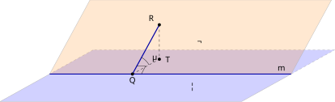
查看 TikZ 原始碼
\begin{document}
\begin{tikzpicture}[scale=1.5]
\fill[blue,opacity=0.18] (0,0) -- (7,0) -- (9.7,1.5) -- (2.7,1.5) -- cycle;
\draw[gray!60] (0,0) -- (7,0);
\draw[gray!60] (7,0) -- (8.44,0.8);
\draw[gray!60,dashed] (8.44,0.8) -- (9.7,1.5);
\draw[gray!60,dashed] (9.7,1.5) -- (2.7,1.5);
\draw[gray!60,dashed] (2.7,1.5) -- (1.44,0.8);
\draw[gray!60] (1.44,0.8) -- (0,0);
\fill[orange,opacity=0.18] (1.44,0.8) -- (8.44,0.8) -- (9.61,2.95) -- (2.61,2.95) -- cycle;
\draw[gray!60] (1.44,0.8) -- (2.61,2.95) -- (9.61,2.95) -- (8.44,0.8);
\draw[blue!65!black,line width=1.1pt] (1.44,0.8) -- (8.44,0.8);
\draw[blue!65!black,very thick] (3.84,0.8) -- (4.62,2.23);
\draw[dashed] (3.84,0.8) -- (4.62,1.23);
\draw[dashed] (4.62,2.23) -- (4.62,1.23);
\draw (4.1,0.8) -- (4.22,1.03) -- (3.96,1.03);
\draw (3.84,0.8) ++(29.1:0.55) arc[start angle=29.1, end angle=61.5, radius=0.55];
\fill (3.84,0.8) circle (1.3pt);
\fill (4.62,2.23) circle (1.3pt);
\fill (4.62,1.23) circle (1.3pt);
\node at (5.6,0.45) {$\Pi$};
\node at (5.8,1.75) {$\Omega$};
\node at (8.15,0.95) {$m$};
\node at (3.84,0.6) {$Q$};
\node at (4.4,2.42) {$R$};
\node at (4.88,1.22) {$T$};
\node at (4.47,1.29) {$\theta$};
\end{tikzpicture}
\end{document}应用题里常说的「斜面的倾角」，指斜面所在平面与水平面所成的二面角（两平面夹角的一般度量在 §32.2.6 给出，这里先按直观使用）。量倾角有一条最方便的斜线：
- 最大斜率线（line of greatest slope）：斜面上与坡脚线（斜面与水平面的交线）垂直的那条斜线，沿它上坡最陡；
- 倾角与线面角同值：最大斜率线与水平面所成的线面角恰等于倾角。它的投影落在水平面内与坡脚线垂直的方向线上，斜线与这条投影正是沿坡脚线的平面角的两边（此处按直观接受，§32.2.6 与 §32.2.7 会回到这件事）；
- 于是量出最大斜率线上的一段斜距与相应的铅垂高度，由刻划定理即可读出倾角。
倾角的构型如图 32-24 所示。
图 32-24：斜面的倾角。
斜面 $\Omega$ 站在水平面 $\Pi$ 上，交线为 $m$；斜面上的最大斜率线 $QR$ 与 $m$ 垂直，$R$ 在 $\Pi$ 上的投影是 $T$，虚线表示藏在斜面后面的隐藏线段；$\theta=\angle RQT$ 就是斜面 $\Omega$ 与水平面 $\Pi$ 所成的倾角。
先把「为什么要作投影」说清楚。
- 为什么必须有标准线：空间中的角无法像平面角那样直接测量。斜线
- 投影的额外好处：它把空间角折进一个直角三角形。垂线段
- 选点的自由：选点的位置只改变三角形的尺寸、不改变
设直线 $l$ 交平面 $\Pi$ 于斜足 $A$，求线面角 $\theta$：
第一步（取点）：在 $l$ 上取异于 $A$ 的一点 $B$（常取 $l$ 的已知端点，使 $BA$ 的长已知）。
第二步（作投影）：作 $BO\perp\Pi$，垂足为 $O$，连 $AO$；直线 $AO$ 就是 $l$ 在 $\Pi$ 上的投影（§32.2.3），线面角是 $\theta=\angle BAO$。
第三步（解直角三角形）：在直角三角形 $AOB$ 中用直角三角形刻划
$$\begin{aligned} \sin\theta &= \frac{BO}{BA}\\ \cos\theta &= \frac{AO}{BA} \end{aligned}$$
代入线段的长（通常能直接读出，或先用毕氏定理求出），解出 $\theta$。
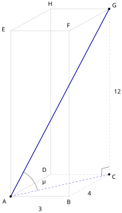
查看 TikZ 原始碼
\begin{document}
\begin{tikzpicture}[scale=1.5]
\draw[gray!60] (0,0) -- (2.34,0);
\draw[gray!60,dashed] (2.34,0) -- (3.94,0.88);
\draw[gray!60,dashed] (3.94,0.88) -- (1.6,0.88);
\draw[gray!60] (1.6,0.88) -- (0,0);
\draw[gray!60] (0,0) -- (0,6.6);
\draw[gray!60] (0,6.6) -- (2.34,6.6);
\draw[gray!60] (2.34,6.6) -- (3.94,7.48) -- (1.6,7.48) -- (0,6.6);
\draw[gray!60,dashed] (3.94,0.88) -- (3.94,7.48);
\draw[gray!60] (1.6,0.88) -- (1.6,7.48);
\draw[gray!60] (2.34,0) -- (2.34,6.6);
\draw[dashed,blue!65!black] (0,0) -- (3.94,0.88);
\draw[blue!65!black,very thick] (0,0) -- (3.94,7.48);
\draw (3.94,1.18) -- (3.65,1.11) -- (3.65,0.81);
\draw (0,0) ++(12.6:1.1) arc[start angle=12.6, end angle=62.2, radius=1.1];
\fill (0,0) circle (1.3pt);
\fill (3.94,0.88) circle (1.3pt);
\fill (3.94,7.48) circle (1.3pt);
\node at (-0.24,-0.2) {$A$};
\node at (2.34,-0.22) {$B$};
\node at (4.14,0.78) {$C$};
\node at (1.36,1.06) {$D$};
\node at (-0.26,6.66) {$E$};
\node at (2.34,6.82) {$F$};
\node at (4.15,7.62) {$G$};
\node at (1.6,7.68) {$H$};
\node at (1.17,-0.5) {$3$};
\node at (3.14,0.12) {$4$};
\node at (4.25,4.18) {$12$};
\node at (1.32,0.6) {$\theta$};
\end{tikzpicture}
\end{document}如图 32-25 所示，长方体 $ABCDEFGH$ 中 $AB=3$、$BC=4$、$AE=12$（长方体的基本形象见 立体几何 (I)），求体对角线 $AG$ 与底面 $ABCD$ 所成的线面角。
图 32-25：长方体中体对角线的线面角。
体对角线 $AG$ 的斜足是 $A$；侧棱 $CG$ 垂直于底面 $ABCD$，故 $G$ 的投影是 $C$，投影线段是 $AC$；所求角是 $\theta=\angle GAC$。
解：按三步算法走。
- 取点、作投影：斜足是 $A$，在 $AG$ 上取点 $G$；长方体的侧棱 $CG$ 垂直于底面 $ABCD$（长方体的基本性质，遵从空间直觉），故 $G$ 的投影是 $C$，$AG$ 在底面上的投影是直线 $AC$（§32.2.3），线面角为 $\theta=\angle GAC$。
- 解直角三角形：下面依次算出 $AC$、$AG$。
先求投影线段 $\overline{AC}$ 的长。底面 $ABCD$ 是矩形，$\triangle ABC$ 以 $B$ 为直角顶点：
$$\begin{aligned} AC^2 &= AB^2+BC^2\\ &= 3^2+4^2\\ &= 25\\ AC &= 5 \end{aligned}$$
再求斜线段 $\overline{AG}$ 的长。$CG\perp$ 底面 $ABCD$ 而 $AC$ 在底面内，故 $\triangle ACG$ 以 $C$ 为直角顶点：
$$\begin{aligned} AG^2 &= AC^2+CG^2\\ &= 5^2+12^2\\ &= 169\\ AG &= 13 \end{aligned}$$
最后由直角三角形刻划：
$$\begin{aligned} \sin\theta &= \frac{GC}{AG}\\ &= \frac{12}{13}\\ \theta &= \sin^{-1}\left(\frac{12}{13}\right)\\ &\approx 67.4^{\circ} \end{aligned}$$
三位有效数字下，体对角线 $AG$ 与底面 $ABCD$ 所成的线面角约为 $67.4^{\circ}$；也可改用 $\tan\theta=\dfrac{GC}{AC}=\dfrac{12}{5}$，得同一结果。
32.2.5 异面直线与两直线的交角 (Skew Lines and the Angle between Two Lines)
在平面内，两条直线只有相交与平行两种位置关系；进入三维后出现第三种：既不相交、也不平行，且不共处在任何一个平面内。图 32-26 用长方体给出最直观的实例：棱
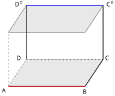
查看 TikZ 原始碼
\begin{document}
\begin{tikzpicture}[scale=1.5]
\coordinate (A) at (0,0);
\coordinate (B) at (3.0,0);
\coordinate (C) at (3.7,1.05);
\coordinate (D) at (0.7,1.05);
\coordinate (Ap) at (0,2.1);
\coordinate (Bp) at (3.0,2.1);
\coordinate (Cp) at (3.7,3.15);
\coordinate (Dp) at (0.7,3.15);
\draw[fill=gray,opacity=0.18] (A) -- (B) -- (C) -- (D) -- cycle;
\draw[fill=gray,opacity=0.18] (Ap) -- (Bp) -- (Cp) -- (Dp) -- cycle;
\draw[very thick] (A) -- (B);
\draw[very thick] (B) -- (C);
\draw[very thick] (C) -- (Cp);
\draw[very thick] (D) -- (Dp);
\draw[dashed] (A) -- (Ap);
\draw[dashed] (A) -- (D);
\draw[dashed] (D) -- (C);
\draw (Ap) -- (Bp);
\draw (Bp) -- (Cp);
\draw (Cp) -- (Dp);
\draw (Dp) -- (Ap);
\draw[very thick,red] (A) -- (B);
\draw[very thick,blue] (Dp) -- (Cp);
\node[below left] at (0,0) {$A$};
\node[below] at (3.0,-0.05) {$B$};
\node[right] at (3.7,1.1) {$C$};
\node[left] at (0.6,1.1) {$D$};
\node[left] at (0.6,3.2) {$D'$};
\node[right] at (3.75,3.2) {$C'$};
\end{tikzpicture}
\end{document}图 32-26：异面直线。前底面的棱
（红）与后顶面的棱 （蓝）既不相交也不平行，且没有平面同时包含这两条棱。
空间中不同在任何一个平面内的两条直线称为异面直线（skew lines）。
异面直线既不相交、也不平行；反之，空间中既不相交也不平行的两条直线必为异面直线。
这种直线的存在性，与「把异面直线平移到共点后交角仍可测」的读法，都遵从直觉交代。
设 $l_1$、$l_2$ 为空间中两条不平行的直线。在空间中任取一点，过该点分别作它们的平行线，这两条过同点的直线所成的 $[0^\circ, 90^\circ]$ 内的角，称为 $l_1$ 与 $l_2$ 的交角。
交角与取点无关：平移不改变直线的方向，两条过同点的平行线的夹角不会因平移位置不同而变（同位角相等的平面性质，遵从直觉交代）。构型如图 32-27 所示。
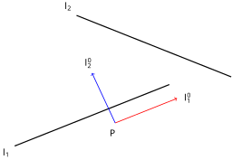
查看 TikZ 原始碼
\begin{document}
\begin{tikzpicture}[scale=1.5]
\coordinate (l1a) at (0,0);
\coordinate (l1b) at (4.0,1.6);
\draw[very thick] (l1a) -- (l1b);
\coordinate (l2a) at (1.6,3.4);
\coordinate (l2b) at (5.6,1.8);
\draw[very thick] (l2a) -- (l2b);
\coordinate (O) at (2.6,0.6);
\coordinate (t1) at (4.2,1.24);
\coordinate (t2) at (2.0,1.9);
\draw[thick,red,->] (O) -- (t1);
\draw[thick,blue,->] (O) -- (t2);
\node[right] at (4.3,1.24) {$l_1'$};
\node[above] at (1.9,1.95) {$l_2'$};
\node[below] at (2.55,0.5) {$P$};
\node[below left] at (-0.05,0) {$l_1$};
\node[above left] at (1.55,3.45) {$l_2$};
\end{tikzpicture}
\end{document}图 32-27：两直线交角的平移定义。任取一点
，把 、 分别平移到过 得 、 ，两平行线所成的角即交角。
查看 TikZ 原始碼
\begin{document}
\begin{tikzpicture}[scale=1.5]
\coordinate (A) at (0,0);
\coordinate (B) at (3.0,0);
\coordinate (C) at (3.7,1.0);
\coordinate (D) at (0.7,1.0);
\coordinate (Ap) at (0,2.3);
\coordinate (Bp) at (3.0,2.3);
\coordinate (Cp) at (3.7,3.3);
\coordinate (Dp) at (0.7,3.3);
\draw[thick] (A) -- (B) -- (C) -- (Cp) -- (Dp) -- (Ap) -- (A);
\draw[thick] (Ap) -- (Bp) -- (Cp);
\draw[thick] (B) -- (Bp);
\draw[dashed] (A) -- (D);
\draw[dashed] (D) -- (C);
\draw[dashed] (D) -- (Dp);
\node[below left] at (0,0) {$A$};
\node[below] at (3.0,-0.05) {$B$};
\node[right] at (3.75,0.95) {$C$};
\node[left] at (0.62,1.02) {$D$};
\node[above left] at (0,2.34) {$A'$};
\node[above] at (3.0,2.34) {$B'$};
\node[above right] at (3.75,3.34) {$C'$};
\node[above left] at (0.62,3.34) {$D'$};
\end{tikzpicture}
\end{document}在长方体 $ABCDA'B'C'D'$ 中（底面 $ABCD$、顶面 $A'B'C'D'$，侧棱 $AA'$、$BB'$、$CC'$、$DD'$），判断下列各对棱的位置关系（相交、平行或异面），并简述理由。构型如图 32-28 所示。
图 32-28：长方体的十二条棱。题中各对棱都在图中可指认。
(a) $AB$ 与 $A'B'$；
(b) $AB$ 与 $BC$；
(c) $AB$ 与 $CC'$；
(d) $AD$ 与 $BB'$。
解：每一对都按两步判断。第一步看两线有无公共点；第二步找同时含两线的平面。
(a) $AB$ 与 $A'B'$ 无公共点，且同在前面 $ABB'A'$ 所在平面内；该面是长方形，$AB$、$A'B'$ 是它的一组对边，故 $AB\parallel A'B'$。
(b) $AB$ 与 $BC$ 有公共点 $B$，且两棱不同线，故相交于点 $B$。
(c) $AB$ 与 $CC'$ 无公共点（$C$ 不在棱 $AB$ 上，$C'$ 在顶面）。若存在平面 $\Xi$ 同时含两线，则 $\Xi$ 含 $A$、$B$、$C$ 三点（点 $C$ 在直线 $CC'$ 上）；$A$、$B$、$C$ 不共线，而不共线的三点确定唯一平面（空间直观事实），故 $\Xi$ 只能是底面 $ABCD$ 所在平面；但于是 $C'$ 也在底面所在平面内，与侧棱 $CC'\perp$ 底面且 $C'\ne C$ 矛盾。不存在同时含两线的平面，故 $AB$ 与 $CC'$ 异面。
(d) $AD$ 与 $BB'$ 无公共点（$B$ 不在棱 $AD$ 上，$B'$ 在顶面）。若平面 $\Xi$ 同时含两线，则 $\Xi$ 含不共线三点 $A$、$D$、$B$，只能是底面 $ABCD$ 所在平面；但 $B'$ 不在底面所在平面内（侧棱 $BB'\perp$ 底面且 $B'\ne B$），矛盾。故 $AD$ 与 $BB'$ 异面。
方法小结：长方体的棱彼此之间的平行很容易指认（同向的四条棱两两平行、同一面的对边平行），相交只看公共顶点；要证异面，就用上面的论证：假设共面，不共线三点把平面锁死，再由第三个平面外的顶点得出矛盾。
- 平移会合：把其中一条直线平移到与另一条相交的位置。常用做法是构造平行四边形或补作平行线，让两根线在同一点处相交；在长方体、棱锥等对称图形中，这一平移往往就是「连接某个已知点」的一步构造。
- 落进三角形：交角的计算通常落在一张三角形里，三边长可由两点距离公式与三维毕氏引理（§32.2.1）直接读出。
查看 TikZ 原始碼
\begin{document}
\begin{tikzpicture}[scale=1.5]
\draw[very thick] (0.2,0.4) -- (4.2,1.2);
\draw[thick,dashed] (1.8,2.4) -- (2.123,0.785);
\draw[thick] (1.8,2.4) -- (3.534,1.067);
\draw (2.08,1.0) -- (2.296,1.044) -- (2.339,0.828);
\fill (1.8,2.4) circle (1.3pt);
\fill (2.123,0.785) circle (1.3pt);
\fill (3.534,1.067) circle (1.3pt);
\node[above] at (1.8,2.4) {$P$};
\node[below left] at (2.123,0.785) {$H$};
\node[below right] at (3.534,1.067) {$Q$};
\node[right] at (4.35,1.25) {$m$};
\node[left] at (1.66,1.6) {$PH$};
\node[above right] at (2.9,1.9) {$PQ$};
\end{tikzpicture}
\end{document}设 $P$ 为空间一点、$m$ 为直线、$P \notin m$。若线段 $\overline{PH}$ 连接 $P$ 与 $m$ 上一点 $H$ 且 $PH \perp m$，则 $H$ 称为 $P$ 在 $m$ 上的垂足，$PH$ 称为 $P$ 到 $m$ 的距离。垂足的存在与唯一遵从直觉。由三角形的斜边属性（任取 $m$ 上另一点 $Q$，三角形 $PHQ$ 在 $H$ 处直角，故 $PQ \geq PH$），垂线段是到直线所有连线中最短的一条。构型如图 32-29 所示。
图 32-29：空间点到直线的距离。$PH\perp m$，$H$ 为垂足；$Q$ 为 $m$ 上任取的另一点，则 $PQ\geqPH$。
32.2.6 两平面的位置关系与二面角 (Relative Position of Two Planes and the Dihedral Angle)
空间中两个不同的平面 $\Pi$、$\Omega$ 只有两种位置关系：
- 相交：公共点集是一条直线；
- 平行：没有公共点。
除相交与平行外不存在其他可能（若一个平面含有不在一直线上且都在 $\Pi$ 内的三点，两平面便重合为一）。两平面相交/平行的判定直观，遵从直觉交代。
相交的情形如图 32-30A 所示。
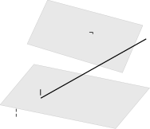
查看 TikZ 原始碼
\begin{document}
\begin{tikzpicture}[scale=1.5]
\coordinate (a1) at (-0.3,0.8);
\coordinate (a2) at (3.1,0.1);
\coordinate (a3) at (4.1,1.3);
\coordinate (a4) at (0.7,2.0);
\draw[fill=gray,opacity=0.18] (a1) -- (a2) -- (a3) -- (a4) -- cycle;
\coordinate (b1) at (0.5,2.6);
\coordinate (b2) at (3.3,1.75);
\coordinate (b3) at (3.9,3.15);
\coordinate (b4) at (1.1,3.9);
\draw[fill=gray,opacity=0.18] (b1) -- (b2) -- (b3) -- (b4) -- cycle;
\draw[very thick] (0.9,1.0) -- (4.0,2.75);
\node[above] at (2.4,2.78) {$\Omega$};
\node[above] at (0.9,1.0) {$l$};
\node[below] at (0.2,0.75) {$\Pi$};
\end{tikzpicture}
\end{document}图 32-30A：两平面相交。交线
是两条相交平面的公共点集。
平行的情形如图 32-30B 所示。
查看 TikZ 原始碼
\begin{document}
\begin{tikzpicture}[scale=1.5]
\coordinate (a1) at (-0.3,0.6);
\coordinate (a2) at (3.1,-0.1);
\coordinate (a3) at (4.1,1.1);
\coordinate (a4) at (0.7,1.8);
\draw[fill=gray,opacity=0.18] (a1) -- (a2) -- (a3) -- (a4) -- cycle;
\coordinate (b1) at (-0.3,2.4);
\coordinate (b2) at (3.1,1.7);
\coordinate (b3) at (4.1,2.9);
\coordinate (b4) at (0.7,3.6);
\draw[fill=gray,opacity=0.18] (b1) -- (b2) -- (b3) -- (b4) -- cycle;
\node[below] at (0.2,0.55) {$\Pi$};
\node[above] at (0.2,3.62) {$\Omega$};
\end{tikzpicture}
\end{document}图 32-30B：两平面平行。无公共点。
两相交平面的公共点集所成的直线称为这两个平面的交线（line of intersection）；在二面角语境中，交线也叫二面角的棱（edge）。
设两平面 $\Pi$、$\Omega$ 相交于棱 $l$。二面角的平面角（plane angle）按三步构造：
- 在棱 $l$ 上任取一点 $M$；
- 在 $\Pi$ 内过 $M$ 作 $l$ 的垂线 $MA$，在 $\Omega$ 内过 $M$ 作 $l$ 的垂线 $MB$；
- 两垂线在 $M$ 处所成的角 $\angle AMB$ 就是平面角。
平面角的大小作为两平面的二面角（dihedral angle），取值范围是 $[0^\circ, 180^\circ]$；应用题里常出现的二面角为锐角。设定如图 32-31 所示。
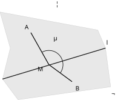
查看 TikZ 原始碼
\begin{document}
\begin{tikzpicture}[scale=1.5]
\coordinate (m1) at (0.4,0.3);
\coordinate (m2) at (4.4,1.5);
\draw[very thick] (m1) -- (m2);
\coordinate (a1) at (0.7,1.5);
\coordinate (a2) at (0.3,2.9);
\coordinate (a3) at (4.1,2.2);
\draw[fill=gray,opacity=0.18] (m1) -- (a1) -- (a2) -- (a3) -- (m2) -- cycle;
\coordinate (b1) at (1.0,-0.5);
\coordinate (b2) at (4.6,0.0);
\draw[fill=gray,opacity=0.18] (m1) -- (m2) -- (b2) -- (b1) -- cycle;
\coordinate (M) at (2.2,0.86);
\coordinate (A) at (1.5,2.1);
\coordinate (B) at (3.1,0.2);
\draw[very thick] (M) -- (A);
\draw[very thick] (M) -- (B);
\draw[thick] (1.929,1.339) arc[start angle=119.49, end angle=-36.2, radius=0.55];
\node[above] at (1.35,2.15) {$A$};
\node[below right] at (3.15,0.1) {$B$};
\node[below left] at (2.1,0.85) {$M$};
\node[above] at (2.55,3.05) {$\Pi$};
\node[below right] at (4.55,-0.1) {$\Omega$};
\node[above right] at (4.35,1.55) {$l$};
\node[above] at (2.44,1.72) {$\theta$};
\end{tikzpicture}
\end{document}图 32-31：二面角的平面角。过棱上一点
，在两个平面内分别作棱的垂线 、 ，夹角 即二面角的度量。
沿棱把 $M$ 换成另一点 $M'$，各平面内过该点的棱的垂线分别与原来的垂线平行（同一平面内垂直于同一条直线的两线互相平行，Ch8 §8.1），所以新的平面角与原来的平面角是同位角关系，大小不变；如图 32-32 所示。因此二面角的平面角可以任选棱上方便计算的一点来作。
查看 TikZ 原始碼
\begin{document}
\begin{tikzpicture}[scale=1.5]
\coordinate (m0) at (0.3,0.4);
\coordinate (m1) at (4.6,1.7);
\draw[very thick] (m0) -- (m1);
\coordinate (M) at (1.4,0.79);
\coordinate (Mp) at (3.2,1.3);
\coordinate (MAa) at (0.6,1.8);
\coordinate (MAb) at (2.2,2.2);
\coordinate (MBa) at (0.9,-0.2);
\coordinate (MBb) at (2.5,0.15);
\draw[thick] (M) -- (MAa);
\draw[thick] (M) -- (MBa);
\draw[thick] (Mp) -- (MAb);
\draw[thick] (Mp) -- (MBb);
\node[above] at (0.65,1.85) {$A$};
\node[below] at (0.8,-0.3) {$B$};
\node[above] at (2.3,2.25) {$A'$};
\node[below] at (2.6,0.1) {$B'$};
\node[below left] at (1.35,0.72) {$M$};
\node[below left] at (3.1,1.22) {$M'$};
\end{tikzpicture}
\end{document}图 32-32：平面角与取点无关。
处的两条垂线分别与 处的两条垂线平行，两组夹角同为平面角。
- 定棱：确认两平面的交线 $l$；
- 选点：在 $l$ 上取一点 $M$（取标准：标题里要用到的垂线要能在此点自然作出；常见取法是已知图形的顶点或斜面上的斜高/中线垂足）；
- 作两垂线：分别在两平面内过 $M$ 作棱的垂线，得到平面角；
- 计算：在由两垂线段及第三边构成的三角形中，用余弦公式或三角比求此角。
分析：为什么选这两点作垂线？因为二面角的定义按「过棱上同一点、分别在两平面内垂直于棱」来构造；在棱锥等图形中，侧面的斜高（顶点到底边中点的连线，等腰三角形的中线兼高）天然垂直于底边，底面上的斜影（顶点投影与底边中点的连线）同样垂直于底边，于是这两条线段就构成所得二面角的平面角，无须额外构造。
查看 TikZ 原始碼
\begin{document}
\begin{tikzpicture}[scale=1.5]
\coordinate (C) at (0,0);
\coordinate (D) at (10,0);
\coordinate (M0) at (5,0);
\coordinate (M) at (5,12);
\draw[very thick] (C) -- (M) -- (D);
\draw[dashed,thick] (M) -- (M0);
\draw[very thick] (C) -- (D);
\coordinate (r1) at (5,0.6);
\coordinate (r2) at (5.6,0);
\coordinate (r3) at (5.6,0.6);
\draw (r1) -- (r3);
\draw (r2) -- (r3);
\draw[thick] (4.487,10.59) arc[start angle=250, end angle=290, radius=1.5];
\node[below left] at (0,0) {$C$};
\node[below right] at (10,0) {$D$};
\node[above] at (5,12.05) {$M$};
\node[below right] at (5.05,0.02) {$M_0$};
\node[left] at (2.2,6.6) {$MC = 13$};
\node[right] at (7.6,6.0) {$MD = 13$};
\node[right] at (5.08,6.0) {$MM_0 = 12$};
\node[below] at (5,-0.45) {$CD = 10$};
\node at (4.72,10.7) {$\theta$};
\end{tikzpicture}
\end{document}一座坡屋顶的两个斜面对称，屋脊线 $AB$ 位于两檐中线的正上方，屋脊的高为 $12$（屋脊到水平屋檐平面所在处的距离），两檐之间沿剖面方向的水平距离为 $10$（即从屋脊铅垂向下、分别通往两檐的水平距离各为 $5$）。求两斜面所成的（内）二面角。构型如图 32-33 所示。
图 32-33：坡屋顶的剖面。剖面垂直于屋脊，$M$ 处两条坡长线段 $\overline{MC}$、$MD$ 与檐间水平段 $CD$ 构成二面角的平面角三角形。
解：
过屋脊上一点 $M$ 作垂直于屋脊的剖面；剖面在两斜面上截得的线段 $\overline{MC}$、$MD$ 分别是两斜面的坡长，且各自垂直于屋脊；两檐点 $C$、$D$ 之间的水平距离为 $10$。
(a) 坡长：取剖面三角形的话，屋脊的高度 $12$ 与半跨 $5$ 构成直角三角形的两条直角边，坡长
$$\begin{aligned} MC^2 &= 5^2 + 12^2 \\ &= 25 + 144 = 169 \\ MC &= 13 \end{aligned}$$
故 $MC = MD = 13$。
(b) 内二面角：两垂线 $MC$、$MD$ 与第三边 $CD = 10$ 构成三角形 $MCD$ 的平面角（剖面如图 32-33 所示）。由余弦公式（§32.1.2）：
$$\begin{aligned} \cos\angle CMD &= \frac{MC^2 + MD^2 - CD^2}{2 \cdot MC \cdot MD} \\ &= \frac{169 + 169 - 100}{2 \cdot 13 \cdot 13} \\ &= \frac{238}{338} = \frac{119}{169} \end{aligned}$$
故内二面角 $\angle CMD = \arccos\dfrac{119}{169} \approx 45.2^\circ$（准确至一位小数）。
32.2.7 三垂线定理及其逆定理 (Theorem of Three Perpendiculars and its Converse)
三垂线定理讲一竖（垂线
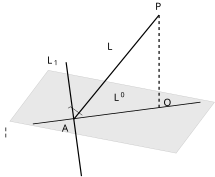
查看 TikZ 原始碼
\begin{document}
\begin{tikzpicture}[scale=1.5]
\coordinate (A1) at (-0.5,1.0);
\coordinate (A2) at (3.4,0.25);
\coordinate (A3) at (4.3,1.45);
\coordinate (A4) at (0.4,2.2);
\draw[fill=gray,opacity=0.18] (A1) -- (A2) -- (A3) -- (A4) -- cycle;
\coordinate (A) at (1.0,1.05);
\coordinate (O) at (3.0,1.32);
\coordinate (Lp1) at (0.04,0.938);
\coordinate (Lp2) at (3.97,1.45);
\draw[thick] (Lp1) -- (Lp2);
\coordinate (Lu1) at (0.82,2.39);
\coordinate (Lu2) at (1.18,-0.29);
\draw[very thick] (Lu2) -- (Lu1);
\coordinate (P) at (3.0,3.5);
\draw[very thick] (A) -- (P);
\draw[dashed,very thick] (O) -- (P);
\coordinate (q1) at (0.865,1.308); % A + 0.26*u1 = (1.0-0.0348,1.05+0.2577)
\coordinate (q2) at (0.920,1.343); % q1 + 0.26*u2 = (0.865+0.2577,1.308+0.0348)
\coordinate (q3) at (1.200,1.143); % A + 0.26*u2
\draw (q1) -- (q2) -- (q3);
\node[above] at (3.0,3.54) {$P$};
\node[above right] at (3.02,1.28) {$O$};
\node[below left] at (0.98,1.0) {$A$};
\node[left] at (0.72,2.42) {$L_1$};
\node[above] at (2.05,1.4) {$L'$};
\node[above right] at (1.7,2.6) {$L$};
\node[below left] at (-0.4,0.92) {$\Pi$};
\end{tikzpicture}
\end{document}设 $P$ 为平面 $\Pi$ 外一点，$O$ 为 $P$ 在 $\Pi$ 上的投影（即 $PO\perp\Pi$，垂足为 $O$）；$A$ 为 $\Pi$ 内一点且 $A \neq O$；直线 $L$ 经过 $A$ 与 $P$（故 $L$ 与 $\Pi$ 斜交于斜足 $A$，术语见 §32.2.4）；$L'$ 为 $L$ 在 $\Pi$ 上的投影（由 §32.2.3，是过 $A$ 与 $O$ 的一条直线）；$L_1$ 为 $\Pi$ 内过 $A$ 的一条直线。则
$$L' \perp L_1 \iff L \perp L_1$$
设定如图 32-34 所示。
图 32-34：三垂线定理的设定。虚线为垂线段 $\overline{PO}$；粗实线为斜线 $L$；细实线为其投影 $L'$；$L_1$ 为平面 $\Pi$ 内过斜足 $A$ 的直线，图中标出 $L_1 \perp L'$。
设 $X$、$Y$ 为 $L_1$ 上关于 $A$ 对称的两点（$A$ 为线段 $\overline{XY}$ 的中点），记 $AX = AY = t$。要证 $L' \perp L_1$ 等价于 $\angle OAX = 90^\circ$（$OA \perp \overrightarrow{AX}$），要证 $L \perp L_1$ 等价于 $\angle PAX = 90^\circ$（$PA \perp \overrightarrow{AX}$）。
方向一：$L' \perp L_1 \implies L \perp L_1$。
前提 $\angle OAX = 90^\circ$ 与 $A$ 为 $XY$ 中点给出，在 $\Pi$ 内的两个直角三角形 $OAX$ 与 $OAY$ 中：
$$\begin{aligned} OX^2 &= OA^2 + AX^2 \\ OY^2 &= OA^2 + AY^2 = OA^2 + AX^2 = OX^2 \end{aligned}$$
开平方（线段长非负）得 $OX = OY$。
由三维毕氏引理（$PO \perp \Pi$ 且 $O$ 为垂足，对 $\Pi$ 内每一点 $Q$ 都有 $PQ^2 = PO^2 + OQ^2$），对 $X$、$Y \in \Pi$ 分别有
$$\begin{aligned} PX^2 &= PO^2 + OX^2 \\ PY^2 &= PO^2 + OY^2 = PO^2 + OX^2 = PX^2 \end{aligned}$$
故 $PX = PY$。三角形 $PXY$ 为等腰三角形且 $A$ 为底边 $XY$ 的中点，由等腰三角形三线合一（Ch8 §8.4），中线 $PA$ 同时是高线，故 $PA \perp \overrightarrow{AX}$，即 $\angle PAX = 90^\circ$，从而 $L \perp L_1$。
方向二：$L \perp L_1 \implies L' \perp L_1$。
前提 $\angle PAX = \angle PAY = 90^\circ$ 给出，在平面 $PAX$ 与 $PAY$ 内分别由毕氏定理：
$$\begin{aligned} PX^2 &= PA^2 + AX^2 \\ PY^2 &= PA^2 + AY^2 = PX^2 \end{aligned}$$
故 $PX = PY$。由三维毕氏引理移项，$OX^2 = PX^2 - PO^2$ 与 $OY^2 = PY^2 - PO^2$；又在三角形 $POA$ 中 $PO \perp OA$，毕氏定理给出 $PA^2 = PO^2 + OA^2$，代入：
$$\begin{aligned} OX^2 &= (PA^2 + AX^2) - PO^2 \\ &= (PO^2 + OA^2) + AX^2 - PO^2 \\ &= OA^2 + AX^2 \\ OY^2 &= (PA^2 + AY^2) - PO^2 = OA^2 + AX^2 = OX^2 \end{aligned}$$
故 $OX = OY$。三角形 $OXY$ 为等腰三角形且 $A$ 为底边 $XY$ 的中点，由等腰三角形三线合一，中线 $OA$ 同时是高线，故 $OA \perp \overrightarrow{AX}$，即 $\angle OAX = 90^\circ$，从而 $L' \perp L_1$。
两个方向各自闭合，合并即为 $L' \perp L_1 \iff L \perp L_1$。
在 $PO \perp \Pi$ 的前提下，平面内的一根直线与「影」垂直、当且仅当它与「斜」垂直。换句话说：只要竖杆确立了，影与斜的垂直属性就互相交付，二者不必再分别验证。
使用三垂线定理前必须核实三线齐全：$PO$ 垂直于 $L_1$ 所在的平面且垂足为 $O$、$L'$ 确为斜线 $L$ 的投影、三线交于同一斜足 $A$。最常见的误用是只确认斜线与投影、跳过「投影是否为该斜线的投影」这一步。
32.2.8 拓展阅读：投影形状的证明 (Extension: Why the Projection of a Line Is a Line)
本节超出常规课程的要求，仅作拓展阅读，主线读者可直接跳到 §32.3。§32.2.3 里说「斜交或平行的直线，逐点投下去仍排成一条直线」，这句按直观接受的话，本节把它证完整。
先把思路摆出来。要证「投影组成一条直线」，就是找一条候选直线，再证两件事：
- 每个投影点都落在候选直线上；
- 候选直线上的每个点，都是
两件事合起来，投影恰好就是这条候选直线。候选从哪里来？斜交时，
论证随时调用三条空间直观事实，先集中交代：
- 事实一（定面）：两条相交直线确定一个平面，两条平行直线也确定一个平面；平面若含一条直线上的两点，就含整条直线。
- 事实二（同垂必平行）：垂直于同一平面的两条直线互相平行；反之，两条平行线中若有一条垂直于某平面，另一条也垂直于该平面。
- 事实三（交线成直）：两平面一旦有公共点，公共点组成一条直线（§32.2.6 定义（两平面的位置关系）正是按此口径说的）。
查看 TikZ 原始碼
\begin{document}
\begin{tikzpicture}[scale=1.5]
\fill[blue,opacity=0.18] (0,0) -- (6,0) -- (7.08,0.6) -- (1.08,0.6) -- cycle;
\draw[gray!60] (0,0) -- (6,0) -- (7.08,0.6) -- (1.08,0.6) -- cycle;
\draw[very thick] (1.21,0.23) -- (5.61,0.23);
\node at (3.41,0.52) {$l=l'$};
\node at (7.35,0.82) {$\Pi$};
\end{tikzpicture}
\end{document}查看 TikZ 原始碼
\begin{document}
\begin{tikzpicture}[scale=1.5]
\fill[blue,opacity=0.18] (0,0) -- (6,0) -- (7.08,0.6) -- (1.08,0.6) -- cycle;
\draw[gray!60] (0,0) -- (6,0) -- (7.08,0.6) -- (1.08,0.6) -- cycle;
\draw[very thick] (3.05,0.25) -- (3.05,2.75);
\draw (3.33,0.25) -- (3.33,0.53) -- (3.05,0.53);
\fill (3.05,0.25) circle (1.3pt);
\node at (3.05,2.95) {$l$};
\node at (2.72,0.48) {$A=l'$};
\node at (7.35,0.82) {$\Pi$};
\end{tikzpicture}
\end{document}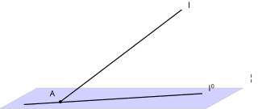
查看 TikZ 原始碼
\begin{document}
\begin{tikzpicture}[scale=1.5]
\fill[blue,opacity=0.18] (0,0) -- (6,0) -- (7.08,0.6) -- (1.08,0.6) -- cycle;
\draw[gray!60] (0,0) -- (6,0) -- (7.08,0.6) -- (1.08,0.6) -- cycle;
\draw[very thick] (1.76,0.2) -- (5.3,2.89);
\draw[very thick] (0.7,0.12) -- (5.9,0.44);
\fill (1.76,0.2) circle (1.3pt);
\node at (5.52,3.02) {$l$};
\node at (1.54,0.44) {$A$};
\node at (6.15,0.6) {$l'$};
\node at (7.35,0.9) {$\Pi$};
\end{tikzpicture}
\end{document}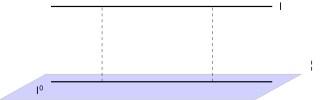
查看 TikZ 原始碼
\begin{document}
\begin{tikzpicture}[scale=1.5]
\fill[blue,opacity=0.18] (0,0) -- (6,0) -- (7.08,0.6) -- (1.08,0.6) -- cycle;
\draw[gray!60] (0,0) -- (6,0) -- (7.08,0.6) -- (1.08,0.6) -- cycle;
\draw[very thick] (1.2,2.2) -- (6.4,2.2);
\draw[very thick] (1.2,0.42) -- (6.4,0.42);
\draw[dashed] (2.4,0.42) -- (2.4,2.2);
\draw[dashed] (5.0,0.42) -- (5.0,2.2);
\node at (6.6,2.2) {$l$};
\node at (0.92,0.22) {$l'$};
\node at (7.35,0.82) {$\Pi$};
\end{tikzpicture}
\end{document}设 $\Pi$ 为平面，$l$ 为空间中的直线，$l'$ 为 $l$ 上每一点在 $\Pi$ 上的投影组成的集合（§32.2.3）。则
(i) 若 $l\subset\Pi$，则 $l'=l$；
(ii) 若 $l\perp\Pi$，垂足为 $A$，则 $l'$ 是单点 $A$；
(iii) 若 $l$ 与 $\Pi$ 相交但不垂直（设交点为 $A$），则 $l'$ 是过 $A$ 的一条直线；若 $l\parallel\Pi$，则 $l'$ 是与 $l$ 平行的一条直线，且 $l$ 上每一点到 $\Pi$ 的距离都相等。
情形 (i) 如图 32-35A 所示。
图 32-35A：情形 (i)，$l\subset\Pi$。
每一点的投影都是它自己，$l'=l$。
情形 (ii) 如图 32-35B 所示。
图 32-35B：情形 (ii)，$l\perp\Pi$。
一切垂足都是 $A$，$l'$ 缩成一点。
情形 (iii) 的斜交如图 32-35C 所示。
图 32-35C：情形 (iii) 之斜交。
$l$ 交 $\Pi$ 于 $A$ 且不垂直，投影是过 $A$ 的直线 $l'$。
情形 (iii) 的平行如图 32-35D 所示。
图 32-35D：情形 (iii) 之平行。
投影 $l'$ 是与 $l$ 平行的直线，两线处处同距。
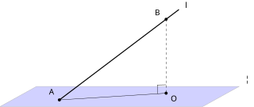
查看 TikZ 原始碼
\begin{document}
\begin{tikzpicture}[scale=1.5]
\fill[blue,opacity=0.18] (0,0) -- (6,0) -- (7.08,0.6) -- (1.08,0.6) -- cycle;
\draw[gray!60] (0,0) -- (6,0) -- (7.08,0.6) -- (1.08,0.6) -- cycle;
\draw[very thick] (1.76,0.2) -- (5.3,2.89);
\draw[dashed] (4.92,2.6) -- (4.92,0.4);
\draw (1.76,0.2) -- (4.92,0.4);
\draw (4.661,0.384) -- (4.66,0.644) -- (4.92,0.65);
\fill (1.76,0.2) circle (1.3pt);
\fill (4.92,2.6) circle (1.3pt);
\fill (4.92,0.4) circle (1.3pt);
\node at (5.52,3.02) {$l$};
\node at (4.68,2.8) {$B$};
\node at (1.54,0.44) {$A$};
\node at (5.15,0.24) {$O$};
\node at (7.35,0.82) {$\Pi$};
\end{tikzpicture}
\end{document}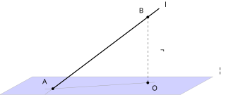
查看 TikZ 原始碼
\begin{document}
\begin{tikzpicture}[scale=1.5]
\fill[blue,opacity=0.18] (0,0) -- (6,0) -- (7.08,0.6) -- (1.08,0.6) -- cycle;
\draw[gray!60] (0,0) -- (6,0) -- (7.08,0.6) -- (1.08,0.6) -- cycle;
\\fill[orange,opacity=0.14] (1.5,0.006) -- (5.15,2.775) -- (5.15,0.416) -- (1.5,0.184) -- cycle;
\draw[gray!70] (1.5,0.006) -- (5.15,2.775);
\draw[gray!70] (1.5,0.184) -- (5.15,0.416);
\draw[very thick] (1.76,0.2) -- (5.3,2.89);
\draw[dashed] (4.92,2.6) -- (4.92,0.4);
\fill (1.76,0.2) circle (1.3pt);
\fill (4.92,2.6) circle (1.3pt);
\fill (4.92,0.4) circle (1.3pt);
\node at (5.52,3.02) {$l$};
\node at (4.72,2.82) {$B$};
\node at (1.5,0.44) {$A$};
\node at (5.15,0.22) {$O$};
\node at (5.42,1.5) {$\Omega$};
\node at (7.35,0.82) {$\Pi$};
\end{tikzpicture}
\end{document}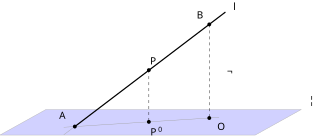
查看 TikZ 原始碼
\begin{document}
\begin{tikzpicture}[scale=1.5]
\fill[blue,opacity=0.18] (0,0) -- (6,0) -- (7.08,0.6) -- (1.08,0.6) -- cycle;
\draw[gray!60] (0,0) -- (6,0) -- (7.08,0.6) -- (1.08,0.6) -- cycle;
\\fill[orange,opacity=0.14] (1.5,0.006) -- (5.15,2.775) -- (5.15,0.416) -- (1.5,0.184) -- cycle;
\draw[gray!70] (1.5,0.006) -- (5.15,2.775);
\draw[gray!70] (1.5,0.184) -- (5.15,0.416);
\draw[very thick] (1.76,0.2) -- (5.3,2.89);
\draw[dashed] (4.92,2.6) -- (4.92,0.4);
\draw[dashed] (3.5,1.526) -- (3.5,0.31);
\fill (1.76,0.2) circle (1.3pt);
\fill (4.92,2.6) circle (1.3pt);
\fill (4.92,0.4) circle (1.3pt);
\fill (3.5,1.526) circle (1.3pt);
\fill (3.5,0.31) circle (1.3pt);
\node at (5.52,3.02) {$l$};
\node at (4.72,2.82) {$B$};
\node at (1.48,0.46) {$A$};
\node at (5.2,0.2) {$O$};
\node at (3.62,1.74) {$P$};
\node at (3.66,0.08) {$P'$};
\node at (5.42,1.5) {$\Omega$};
\node at (7.35,0.82) {$\Pi$};
\end{tikzpicture}
\end{document}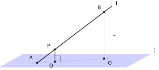
查看 TikZ 原始碼
\begin{document}
\begin{tikzpicture}[scale=1.5]
\fill[blue,opacity=0.18] (0,0) -- (6,0) -- (7.08,0.6) -- (1.08,0.6) -- cycle;
\draw[gray!60] (0,0) -- (6,0) -- (7.08,0.6) -- (1.08,0.6) -- cycle;
\\fill[orange,opacity=0.14] (1.5,0.006) -- (5.15,2.775) -- (5.15,0.416) -- (1.5,0.184) -- cycle;
\draw[gray!70] (1.5,0.006) -- (5.15,2.775);
\draw[gray!70] (1.5,0.184) -- (5.15,0.416);
\draw[very thick] (1.76,0.2) -- (5.3,2.89);
\draw[dashed] (4.92,2.6) -- (4.92,0.4);
\draw[very thick] (2.6,0.253) -- (2.6,0.838);
\draw (2.6,0.53) -- (2.86,0.526) -- (2.86,0.273);
\fill (1.76,0.2) circle (1.3pt);
\fill (4.92,2.6) circle (1.3pt);
\fill (4.92,0.4) circle (1.3pt);
\fill (2.6,0.253) circle (1.3pt);
\fill (2.6,0.838) circle (1.3pt);
\node at (5.52,3.02) {$l$};
\node at (4.72,2.82) {$B$};
\node at (1.48,0.46) {$A$};
\node at (5.2,0.2) {$O$};
\node at (2.42,0.05) {$Q$};
\node at (2.32,1.02) {$P$};
\node at (5.42,1.5) {$\Omega$};
\node at (7.35,0.82) {$\Pi$};
\end{tikzpicture}
\end{document}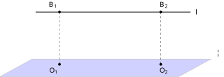
查看 TikZ 原始碼
\begin{document}
\begin{tikzpicture}[scale=1.5]
\fill[blue,opacity=0.18] (0,0) -- (6,0) -- (7.08,0.6) -- (1.08,0.6) -- cycle;
\draw[gray!60] (0,0) -- (6,0) -- (7.08,0.6) -- (1.08,0.6) -- cycle;
\draw[very thick] (1.2,2.2) -- (6.4,2.2);
\draw[dashed] (2.0,2.2) -- (2.0,0.42);
\draw[dashed] (5.4,2.2) -- (5.4,0.42);
\fill (2.0,2.2) circle (1.3pt);
\fill (5.4,2.2) circle (1.3pt);
\fill (2.0,0.42) circle (1.3pt);
\fill (5.4,0.42) circle (1.3pt);
\node at (6.6,2.2) {$l$};
\node at (1.78,2.44) {$B_1$};
\node at (5.5,2.44) {$B_2$};
\node at (1.8,0.2) {$O_1$};
\node at (5.5,0.2) {$O_2$};
\node at (7.35,0.82) {$\Pi$};
\end{tikzpicture}
\end{document}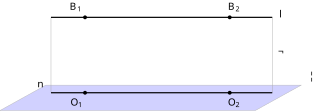
查看 TikZ 原始碼
\begin{document}
\begin{tikzpicture}[scale=1.5]
\fill[blue,opacity=0.18] (0,0) -- (6,0) -- (7.08,0.6) -- (1.08,0.6) -- cycle;
\draw[gray!60] (0,0) -- (6,0) -- (7.08,0.6) -- (1.08,0.6) -- cycle;
\\fill[orange,opacity=0.12] (1.2,0.42) -- (6.4,0.42) -- (6.4,2.2) -- (1.2,2.2) -- cycle;
\draw[gray!70] (1.2,0.42) -- (1.2,2.2);
\draw[gray!70] (6.4,0.42) -- (6.4,2.2);
\draw[very thick] (1.2,2.2) -- (6.4,2.2);
\draw[very thick] (1.2,0.42) -- (6.4,0.42);
\fill (2.0,2.2) circle (1.3pt);
\fill (5.4,2.2) circle (1.3pt);
\fill (2.0,0.42) circle (1.3pt);
\fill (5.4,0.42) circle (1.3pt);
\node at (6.6,2.28) {$l$};
\node at (1.78,2.44) {$B_1$};
\node at (5.5,2.44) {$B_2$};
\node at (1.8,0.18) {$O_1$};
\node at (5.5,0.18) {$O_2$};
\node at (0.95,0.6) {$n$};
\node at (6.62,1.4) {$\Omega$};
\node at (7.35,0.82) {$\Pi$};
\end{tikzpicture}
\end{document}情形 (i)：$l\subset\Pi$ 时，$l$ 上每一点都在 $\Pi$ 内，按定义（§32.2.1）它的投影是它自己，故 $l'=l$。
情形 (ii)：$l\perp\Pi$ 且垂足为 $A$ 时，由定理（垂直与投影的互相刻划）（§32.2.2），$l$ 上每一点在 $\Pi$ 上的投影都是 $A$，故 $l'$ 就是单点 $A$。
以下处理情形 (iii)。
先证斜交。 $l$ 与 $\Pi$ 交于 $A$ 且 $l$ 不垂直于 $\Pi$。在 $l$ 上取异于 $A$ 的一点 $B$，设 $B$ 的投影为 $O$，即 $BO\perp\Pi$，垂足为 $O$。构图如图 32-36 所示。
图 32-36：斜交构型的起点。$A$ 是 $l$ 与 $\Pi$ 的交点，$B\in l$，$O$ 是 $B$ 的垂足。
先看 $O$ 与 $A$ 不是同一点：若 $O=A$，则 $BO$ 就是直线 $BA$，也就是 $l$ 本身，于是 $l\perp\Pi$，与「斜交」矛盾。故 $O\ne A$，$A$、$O$ 定出直线 $AO$。
把 $l$ 与 $BO$ 装进同一个平面：两线相交于 $B$，由事实一确定平面 $\Omega$；$A$ 在 $l$ 上、$O$ 在 $BO$ 上，都在 $\Omega$ 内，故直线 $AO$ 整条在 $\Omega$ 内。又 $A$、$O$ 同在 $\Pi$ 内，由事实三，$\Omega$ 与 $\Pi$ 的交线正是直线 $AO$。构图如图 32-37 所示。
图 32-37：平面 $\Omega$ 由 $l$ 与 $BO$ 确定，它与 $\Pi$ 的交线是 $AO$。
再证「每个投影点都落在 $AO$ 上」。任取 $P\in l$，设它的投影为 $P'$，即 $PP'\perp\Pi$。$PP'$ 与 $BO$ 同垂直于 $\Pi$，由事实二得 $PP'\parallel BO$。在平面 $\Omega$ 内，过 $P$ 平行于 $BO$ 的直线只有一条；而空间中过 $P$ 垂直于 $\Pi$ 的垂线也唯一（§32.2.1），所以 $PP'$ 正是 $\Omega$ 内那条平行线，$PP'$ 整条在 $\Omega$ 内。垂足 $P'$ 在 $PP'$ 上，故 $P'\in\Omega$，又 $P'\in\Pi$，于是 $P'$ 落在交线 $AO$ 上。构图如图 32-38 所示。
图 32-38：$P\in l$ 的垂线段 $\overline{PP'}$ 不出 $\Omega$，垂足 $P'$ 落在 $AO$ 上。
反过来证「$AO$ 上每个点都是投影点」。任取 $Q\in AO$，在 $\Omega$ 内过 $Q$ 作 $BO$ 的平行线。这条平行线必与 $l$ 相交：若不相交，它在 $\Omega$ 内平行于 $l$，由平面内平行的传递性得 $BO\parallel l$；而 $BO$ 与 $l$ 有公共点 $B$，过一点平行于已知直线的直线唯一，两线便重合，于是 $l=BO\perp\Pi$，与「斜交」矛盾。设交点为 $P$。$PQ\parallel BO$ 且 $BO\perp\Pi$，由事实二（反向）得 $PQ\perp\Pi$，即 $Q$ 正是 $P$ 的投影，$Q\in l'$。构图如图 32-39 所示。
图 32-39：在 $\Omega$ 内过 $Q\in AO$ 作 $BO$ 的平行线，交 $l$ 于 $P$，$Q$ 即 $P$ 的投影。
两向合起来，$l'=AO$，是一条过 $A$ 的直线，斜交证毕。
再证 $l\parallel\Pi$。 在 $l$ 上取两点 $B_1$、$B_2$，设它们的投影分别为 $O_1$、$O_2$，即 $B_1O_1\perp\Pi$、$B_2O_2\perp\Pi$。构图如图 32-40 所示。
图 32-40：平行构型的起点。$B_1$、$B_2$ 是 $l$ 上两点，$O_1$、$O_2$ 是它们的垂足。
先看 $O_1\ne O_2$：若重合于一点 $O$，则 $B_1O$、$B_2O$ 是过 $O$ 的两条都垂直于 $\Pi$ 的直线，与过一点向平面作垂线的唯一性（§32.2.1）矛盾。故 $O_1$、$O_2$ 定出直线 $n=O_1O_2$。
$B_1O_1$ 与 $B_2O_2$ 同垂直于 $\Pi$，由事实二互相平行；由事实一，这两条平行线确定一个平面，而该平面含 $B_1$、$B_2$ 两点，故也含整条 $l$，记这个平面为 $\Omega$。$\Omega$ 与 $\Pi$ 有公共点 $O_1$、$O_2$，由事实三，交线正是 $n$。构图如图 32-41 所示。
图 32-41：$\Omega$ 含 $l$、$n$ 与两条垂线段；$l$ 与 $n$ 同在 $\Omega$ 内。
任取 $P\in l$，设其投影为 $P'$：$PP'\parallel B_1O_1$（事实二），而 $\Omega$ 内过 $P$ 平行于 $B_1O_1$ 的直线唯一、垂线唯一（同上斜交论证），故 $PP'\subset\Omega$，$P'\in\Omega\cap\Pi=n$。反过来任取 $Q\in n$，在 $\Omega$ 内过 $Q$ 作 $B_1O_1$ 的平行线：若它与 $l$ 不相交，则 $B_1O_1\parallel l$，与 $B_1O_1$、$l$ 有公共点 $B_1$ 且 $B_1\notin\Pi$ 矛盾，故它交 $l$ 于某点 $P$；$PQ\perp\Pi$（事实二反向），$Q$ 是 $P$ 的投影。两向合起来，$l'=n$。
$l$ 与 $n$ 同在 $\Omega$ 内且无公共点（公共点将属于 $\Pi$，与 $l\parallel\Pi$ 矛盾），按平面的读法即 $l'\parallel l$。
最后看距离：任取 $P\in l$，其投影 $P'\in n$；$PP'\perp\Pi$ 而 $n\subset\Pi$，故 $PP'\perp n$，$PP'$ 正是平行线 $l$ 与 $n$ 之间的公垂线段。平行线间的距离处处相等，故 $PP'$ 不随 $P$ 改变，即 $l$ 上每一点到 $\Pi$ 的距离都相等。
情形 (i)、(ii)、(iii) 全部证毕。
32.3 空间几何的应用 (Applications in Space)
本节难度上限：T C+ ｜ C B- ｜ E B ｜ Q B-
本节把 §32.1 的解三角形工具与 §32.2 的垂直、角度判定放进常见的空间图形里。不同几何体的求角路线由对称性决定，本节以正方体、正四面体、正四棱锥三个常考构型各发一例。
32.3.1 常见几何体中的角度问题 (Angles in Common Solids)
三种几何体的共性是把「取哪一点作投影」这一步化简：正方体的顶点投影就是相邻面上的对角点，正四面体与正四棱锥的顶点投影由侧棱等长压到底面中心。下列三例逐个演示。
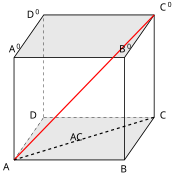
查看 TikZ 原始碼
\begin{document}
\begin{tikzpicture}[scale=1.5]
\coordinate (A) at (0,0);
\coordinate (B) at (2.6,0);
\coordinate (C) at (3.3,1.0);
\coordinate (D) at (0.7,1.0);
\coordinate (Ap) at (0,2.4);
\coordinate (Bp) at (2.6,2.4);
\coordinate (Cp) at (3.3,3.4);
\coordinate (Dp) at (0.7,3.4);
\draw[fill=gray,opacity=0.18] (A) -- (B) -- (C) -- (D) -- cycle;
\draw[fill=gray,opacity=0.18] (Ap) -- (Bp) -- (Cp) -- (Dp) -- cycle;
\draw[thick] (A) -- (B) -- (C) -- (Cp) -- (Dp) -- (Ap) -- (A);
\draw[thick] (Ap) -- (Bp) -- (Cp);
\draw[thick] (B) -- (Bp);
\draw[dashed] (A) -- (D);
\draw[dashed] (D) -- (C);
\draw[dashed] (D) -- (Dp);
\draw[very thick,red] (A) -- (Cp);
\draw[dashed,very thick] (A) -- (C);
\node[below left] at (0,0) {$A$};
\node[below] at (2.6,-0.05) {$B$};
\node[right] at (3.35,1.05) {$C$};
\node[left] at (0.65,1.05) {$D$};
\node[above] at (0,2.44) {$A'$};
\node[above] at (2.6,2.44) {$B'$};
\node[above right] at (3.35,3.42) {$C'$};
\node[left] at (0.65,3.42) {$D'$};
\node[below] at (1.5,0.7) {$AC$};
\end{tikzpicture}
\end{document}设正方体 $ABCDA'B'C'D'$ 的棱长为 $a$，底面为 $ABCD$、顶面为 $A'B'C'D'$。求：
(a) 体对角线 $AC'$（连接顶点 $A$ 与顶面相对顶点 $C'$）在底面所在平面上的投影；
(b) 该体对角线与底面的线面角；
(c) 相邻两侧面的二面角。
解：
(a) 顶点 $C'$ 在底面的投影是 $C$（棱 $CC'$ 铅垂于底面所在平面），而 $A$ 本身就在底面上，故 $AC'$ 的投影是线段 $\overline{AC}$（一条面对角线），如图 32-42 所示。
图 32-42：正方体与体对角线。红色粗实线为体对角线 $AC'$，虚线为其在底面的投影（面对角线 $AC$）；线面角 $\angle C'AC$ 在顶点 $A$ 处读出。
(b) 线面角即 $\angle C'AC$。由三维毕氏引理（或三次毕氏），三边分别为
$$\begin{aligned} AC^2 &= a^2 + a^2 = 2a^2 & (面对角线，底面内毕氏) \\ C'C^2 &= a^2 \\ AC'^2 &= a^2 + a^2 + a^2 = 3a^2 & (体对角线) \end{aligned}$$
三角形 $AC'C$ 在 $C$ 处直角（$\angle ACC' = 90^\circ$，棱铅垂），由三角比：
$$\begin{aligned} \tan\angle C'AC &= \frac{C'C}{AC} = \frac{a}{\sqrt{2}a} = \frac{1}{\sqrt{2}} \\ \angle C'AC &\approx 35.3^\circ \end{aligned}$$
故线面角约为 $35.3^\circ$（准确至一位小数）。
(c) 正方体的相邻两面中，取一面内过棱上任意点的棱垂线与另一面内的棱垂线：以棱 $BC$ 为例，一面内 $BA \perp BC$，另一面内 $BB' \perp BC$，两垂线夹角 $\angle ABB'$ 为 $90^\circ$（正方体的面是正方形，夹角是正方形的内角）。由二面角的定义（§32.2.6），相邻两侧面的二面角为 $90^\circ$。
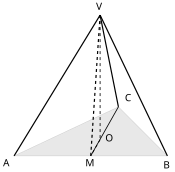
查看 TikZ 原始碼
\begin{document}
\begin{tikzpicture}[scale=1.5]
\coordinate (A) at (0,0);
\coordinate (B) at (3.6,0);
\coordinate (C) at (2.45,1.15);
\coordinate (M) at (1.8,0);
\coordinate (O) at (2.02,0.38);
\coordinate (V) at (2.02,3.3);
\draw[fill=gray,opacity=0.18] (A) -- (B) -- (C) -- cycle;
\draw[very thick] (V) -- (A);
\draw[very thick] (V) -- (B);
\draw[very thick] (V) -- (C);
\draw[dashed,very thick] (V) -- (M);
\draw[thick] (C) -- (M);
\draw[dashed,thick] (V) -- (O);
\draw[dashed,thick] (O) -- (M);
\node[below left] at (0,0) {$A$};
\node[below] at (3.6,-0.05) {$B$};
\node[above right] at (2.52,1.2) {$C$};
\node[above] at (2.02,3.34) {$V$};
\node[below] at (1.8,0) {$M$};
\node[right] at (2.06,0.42) {$O$};
\end{tikzpicture}
\end{document}设正四面体 $VABC$ 的棱长为 $a$，底面为等边三角形 $ABC$。求：
(a) 侧棱 $VA$ 与底面 $ABC$ 的线面角（用其正弦与余弦值）；
(b) 相邻两个侧面（如 $VAB$ 与 $ABC$）所成的二面角（用其余弦值）。
解：
(a) 先看顶点的投影落在哪一点。设 $O$ 为 $V$ 在底面所在平面上的投影，则 $VO \perp$ 底面；底面内过 $O$ 的每条线与 $VO$ 垂直，对 $A$、$B$、$C$ 三点逐一用三维毕氏引理：
$$\begin{aligned} VA^2 &= VO^2 + OA^2 \\ VB^2 &= VO^2 + OB^2 \\ VC^2 &= VO^2 + OC^2 \end{aligned}$$
三式左边由 $VA = VB = VC$ 相等，故 $OA = OB = OC$，即 $O$ 为底面外心（Ch29 §29.3.2 的定义读法）。等边三角形的外心即其中心，故 $O$ 是等边三角形 $ABC$ 的中心。
中心到顶点的距离就是外接圆半径 $R$。由正弦公式（§32.1.3），$2R = \dfrac{a}{\sin 60^\circ} = \dfrac{2a}{\sqrt{3}}$，故 $OA = R = \dfrac{a}{\sqrt{3}}$。于是
$$\begin{aligned} VO^2 &= a^2 - \frac{a^2}{3} = \frac{2a^2}{3} & (毕氏，三角形 VOA 直角在 O) \\ \cos\angle VAO &= \frac{OA}{VA} = \frac{a/\sqrt{3}}{a} = \frac{1}{\sqrt{3}} \\ \sin\angle VAO &= \frac{VO}{VA} = \sqrt{\frac{2}{3}} \end{aligned}$$
故线面角的余弦为 $\dfrac{1}{\sqrt{3}}$、正弦为 $\sqrt{\dfrac{2}{3}}$。
(b) 取棱 $AB$；在面 $VAB$ 内，$VA = VB$ 故三角形 $VAB$ 为等腰三角形，其中线 $VM$（$M$ 为 $AB$ 中点）同时是高线，$VM \perp AB$；在面 $ABC$ 内，等边三角形的中线 $CM$ 同样高线，$CM \perp AB$。两垂线在棱 $AB$ 上共点于 $M$，故 $\angle VMC$ 即二面角的平面角（§32.2.6 的定义），如图 32-43 所示。
图 32-43：正四面体与二面角的平面角。$VM \perp AB$、$CM \perp AB$，两者在棱 $AB$ 上共点于 $M$，夹角 $\angle VMC$ 即两相邻侧面的二面角的平面角。
三边：
$$\begin{aligned} VM &= CM = \frac{\sqrt{3}}{2}a & (等边三角形中线长，底边 $a$ 的 $\tfrac{\sqrt3}{2}$ 倍) \\ VC &= a & (棱长) \end{aligned}$$
由余弦公式（§32.1.2）：
$$\cos\angle VMC = \frac{VM^2 + CM^2 - VC^2}{2VM \cdot CM} = \frac{\frac{3a^2}{4} + \frac{3a^2}{4} - a^2}{2 \cdot \frac{3a^2}{4}} = \frac{\frac{a^2}{2}}{\frac{3a^2}{2}} = \frac{1}{3}$$
故相邻两面的二面角余弦为 $\dfrac{1}{3}$。
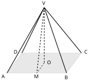
查看 TikZ 原始碼
\begin{document}
\begin{tikzpicture}[scale=1.5]
\coordinate (A) at (0,0);
\coordinate (B) at (2.8,0);
\coordinate (C) at (3.5,0.95);
\coordinate (D) at (0.7,0.95);
\coordinate (O) at (1.75,0.48);
\coordinate (M) at (1.4,0);
\coordinate (V) at (1.75,3.1);
\draw[fill=gray,opacity=0.18] (A) -- (B) -- (C) -- (D) -- cycle;
\draw[very thick] (V) -- (A);
\draw[very thick] (V) -- (B);
\draw[very thick] (V) -- (C);
\draw[very thick] (V) -- (D);
\draw[dashed,very thick] (V) -- (O);
\draw[dashed,very thick] (V) -- (M);
\draw[dashed,thick] (O) -- (M);
\node[below left] at (0,0) {$A$};
\node[below] at (2.8,-0.05) {$B$};
\node[right] at (3.55,1.0) {$C$};
\node[left] at (0.6,1.0) {$D$};
\node[above] at (1.75,3.14) {$V$};
\node[right] at (1.8,0.5) {$O$};
\node[below] at (1.4,0) {$M$};
\end{tikzpicture}
\end{document}设正四棱锥 $VABCD$ 底面 $ABCD$ 为正方形，边长 $2\sqrt{2}$，侧棱长 $3$，顶点在底面中心的正上方。求：
(a) 侧棱 $VA$ 与底面的线面角（用余弦值）；
(b) 侧面 $VAB$ 与底面所成的二面角（用正弦值）。
解：
(a) 四条侧棱等长，设 $O$ 为 $V$ 在底面所在平面上的投影，同前例由三维毕氏引理得 $OA = OB = OC = OD$；过三点的圆唯一（Ch29 §29.1.3），把 $A$、$B$、$C$ 三顶点装下的外接圆圆心唯一，故 $O$ 即正方形的外心（中心）。正方形边长 $s = 2\sqrt{2}$，对角线长 $s\sqrt{2} = 4$，半对角线 $OA = 2$。由毕氏：
$$\begin{aligned} \cos\angle VAO &= \frac{OA}{VA} \\ &= \frac{2}{3} \end{aligned}$$
$$\begin{aligned} VO^2 &= VA^2 - OA^2 \\ &= 9 - 4 = 5 \\ VO &= \sqrt{5} \end{aligned}$$
故线面角余弦为 $\dfrac{2}{3}$。
(b) 侧面对底面的二面角：取底边 $AB$ 中点 $M$；侧面 $VAB$ 中 $VA = VB$ 故中线 $VM \perp AB$（斜高）；底面内 $OM \perp AB$（正方形中心与边中点连线垂直于该边）。两垂线共点于 $M$，平面角即 $\angle VMO$，如图 32-44 所示。
图 32-44：正四棱锥与斜高。$VM$ 为斜高，$VO$ 为锥高，$OM$ 是底面中心到边中点的连线；$\angle VMO$ 即侧面与底面所成二面角的平面角。
在直角三角形 $VMO$ 中（$VO \perp OM$，三维毕氏引理）：
$$\begin{aligned} OM &= \frac{s}{2} = \sqrt{2} \\ \sin\angle VMO &= \frac{VO}{VM} = \frac{\sqrt{5}}{\sqrt{2 + 5}} = \frac{\sqrt{5}}{\sqrt{7}} \end{aligned}$$
故二面角的正弦为 $\sqrt{\dfrac{5}{7}}$。
32.3.2 角锥顶点投影与底面三角形四心的关系 (Projection of the Apex and the Four Centres)
本节超出常规课程的要求，作为扩展阅读处理；内容把 Ch29 §29.3 的三角形四心放到立体几何中对应起来。
设三角锥（角锥／三棱锥）
以下四个定理解答同一个问题：
总体设定如图 32-45 所示。
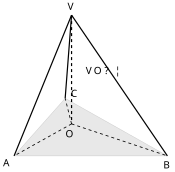
查看 TikZ 原始碼
\begin{document}
\begin{tikzpicture}[scale=1.5]
\coordinate (A) at (0,0);
\coordinate (B) at (3.6,0);
\coordinate (C) at (1.2,1.35);
\coordinate (O) at (1.35,0.75);
\coordinate (V) at (1.35,3.3);
\draw[fill=gray,opacity=0.18] (A) -- (B) -- (C) -- cycle;
\draw[dashed,very thick] (V) -- (O);
\draw[dashed,thick] (O) -- (A);
\draw[dashed,thick] (O) -- (B);
\draw[dashed,thick] (O) -- (C);
\draw[very thick] (V) -- (A);
\draw[very thick] (V) -- (B);
\draw[very thick] (V) -- (C);
\node[below left] at (0,0) {$A$};
\node[below] at (3.6,-0.05) {$B$};
\node[above right] at (1.25,1.3) {$C$};
\node[above] at (1.35,3.34) {$V$};
\node[below] at (1.3,0.68) {$O$};
\node[right] at (1.6,2.0) {$VO \perp \Pi$};
\end{tikzpicture}
\end{document}图 32-45：四心投影的设定。
为顶点 在底面所在平面上的投影（同时候选为底面四心之一）；虚线为投影线与投影半径，粗实线为三条侧棱。
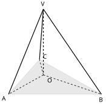
查看 TikZ 原始碼
\begin{document}
\begin{tikzpicture}[scale=1.5]
\coordinate (A) at (0,0);
\coordinate (B) at (3.6,0);
\coordinate (C) at (1.2,1.35);
\coordinate (O) at (1.35,0.75);
\coordinate (V) at (1.35,3.3);
\draw[fill=gray,opacity=0.18] (A) -- (B) -- (C) -- cycle;
\draw[dashed,very thick] (V) -- (O);
\draw[dashed,thick] (O) -- (A);
\draw[dashed,thick] (O) -- (B);
\draw[dashed,thick] (O) -- (C);
\draw[very thick] (V) -- (A);
\draw[very thick] (V) -- (B);
\draw[very thick] (V) -- (C);
\node[below left] at (0,0) {$A$};
\node[below] at (3.6,-0.05) {$B$};
\node[above right] at (1.25,1.3) {$C$};
\node[above] at (1.35,3.34) {$V$};
\node[below right] at (1.42,0.7) {$O$};
\end{tikzpicture}
\end{document}设三角锥 $VABC$ 的顶点 $V$ 在底面 $ABC$ 所在平面上的投影为 $O$（即 $VO$ 垂直于底面所在平面、垂足为 $O$）。则 $O$ 为 $\triangle ABC$ 的外心 $\iff$ 三条侧棱等长，$VA = VB = VC$。设定如图 32-46 所示。
图 32-46：定理（投影为外心）的设定。
$VO$ 垂直于底面所在平面；虚线 $OA$、$OB$、$OC$ 是投影点到三顶点的连线。
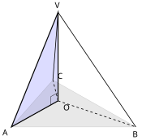
查看 TikZ 原始碼
\begin{document}
\begin{tikzpicture}[scale=1.5]
\coordinate (A) at (0,0);
\coordinate (B) at (3.6,0);
\coordinate (C) at (1.2,1.35);
\coordinate (O) at (1.35,0.75);
\coordinate (V) at (1.35,3.3);
\fill[blue,opacity=0.14] (V) -- (O) -- (A) -- cycle;
\draw[fill=gray,opacity=0.18] (A) -- (B) -- (C) -- cycle;
\draw[very thick] (V) -- (O) -- (A) -- (V) -- cycle;
\draw[thick] (V) -- (B);
\draw[thick] (V) -- (C);
\draw[dashed,thick] (O) -- (B);
\draw[dashed,thick] (O) -- (C);
\draw (1.35,0.99) -- (1.140,0.873) -- (1.140,0.633);
\node[below left] at (0,0) {$A$};
\node[below] at (3.6,-0.05) {$B$};
\node[above right] at (1.25,1.3) {$C$};
\node[above] at (1.35,3.34) {$V$};
\node[below right] at (1.42,0.72) {$O$};
\end{tikzpicture}
\end{document}目的：把「三顶点等距」与「三侧棱等长」经由三个直角三角形 $VOA$、$VOB$、$VOC$ 互相转换。$VO$ 垂直于底面所在平面，故 $VO$ 垂直于底面内过 $O$ 的三条线 $OA$、$OB$、$OC$（§32.2.1 的定义），三个三角形都以 $O$ 为直角顶点，构图如图 32-47 所示。
图 32-47：直角三角形 $VOA$。
$VO\perp OA$，毕氏展开 $VA^2 = VO^2 + OA^2$；$VOB$、$VOC$ 同理。
先看 $O$ 为外心推出侧棱等长。 $O$ 为外心，故 $OA = OB = OC$（Ch29 §29.3.2）。沿图 32-47 把三个直角三角形逐一毕氏展开：
$$\begin{aligned} VA^2 &= VO^2 + OA^2 \\ VB^2 &= VO^2 + OB^2 \\ VC^2 &= VO^2 + OC^2 \end{aligned}$$
右边由 $OA = OB = OC$ 全同，故 $VA = VB = VC$。
再看侧棱等长推出 $O$ 为外心。 同样的三式毕氏展开成立；左边由 $VA = VB = VC$ 全同，三式的右端都等于 $VA^2$，消去公共的 $VO^2$，得 $OA^2 = OB^2 = OC^2$，开平方（线段长非负）得 $OA = OB = OC$。$O$ 到三个顶点等距，故为外心（Ch29 §29.3.2 的外心定义读法）。
两个方向各自闭合。
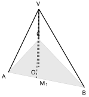
查看 TikZ 原始碼
\begin{document}
\begin{tikzpicture}[scale=1.5]
\coordinate (A) at (0.3,0.6);
\coordinate (B) at (3.3,0);
\coordinate (C) at (1.5,1.9);
\coordinate (O) at (1.5,0.8);
\coordinate (V) at (1.5,3.1);
\coordinate (M1) at (1.415,0.377);
\draw[fill=gray,opacity=0.18] (A) -- (B) -- (C) -- cycle;
\draw[dashed,very thick] (V) -- (O);
\draw[very thick] (V) -- (A);
\draw[very thick] (V) -- (B);
\draw[very thick] (V) -- (C);
\draw[dashed,thick] (V) -- (M1);
\node[below left] at (0.3,0.6) {$A$};
\node[below] at (3.3,-0.05) {$B$};
\node[above] at (1.5,1.95) {$C$};
\node[above] at (1.5,3.14) {$V$};
\node[below left] at (1.46,0.76) {$O$};
\node[below right] at (1.45,0.33) {$M_1$};
\end{tikzpicture}
\end{document}设三角锥 $VABC$ 的顶点 $V$ 在底面 $ABC$ 所在平面上的投影为 $O$（即 $VO$ 垂直于底面所在平面、垂足为 $O$）。则 $O$ 为 $\triangle ABC$ 的内心 $\iff$ $V$ 到底面三边 $AB$、$BC$、$CA$ 的距离相等。设定如图 32-48 所示。
图 32-48：定理（投影为内心）的设定。
$V$ 到边 $AB$ 的距离就是垂线段 $\overline{VM_1}$（三边同此）。
查看 TikZ 原始碼
\begin{document}
\begin{tikzpicture}[scale=1.5]
\coordinate (A) at (0.3,0.6);
\coordinate (B) at (3.3,0);
\coordinate (C) at (1.5,1.9);
\coordinate (O) at (1.5,0.8);
\coordinate (V) at (1.5,3.1);
\coordinate (M1) at (1.415,0.377);
\draw[fill=gray,opacity=0.18] (A) -- (B) -- (C) -- cycle;
\draw[dashed,very thick] (V) -- (O);
\draw[very thick] (V) -- (A);
\draw[very thick] (V) -- (B);
\draw[very thick] (V) -- (C);
\draw[dashed,thick] (V) -- (M1);
\draw[thick] (O) -- (M1);
\draw (1.462,0.612) -- (1.228,0.659) -- (1.181,0.424);
\node[below left] at (0.3,0.6) {$A$};
\node[below] at (3.3,-0.05) {$B$};
\node[above] at (1.5,1.95) {$C$};
\node[above] at (1.5,3.14) {$V$};
\node[above left] at (1.4,0.86) {$O$};
\node[below right] at (1.45,0.33) {$M_1$};
\end{tikzpicture}
\end{document}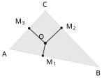
查看 TikZ 原始碼
\begin{document}
\begin{tikzpicture}[scale=1.5]
\coordinate (A) at (0.3,0.6);
\coordinate (B) at (3.3,0);
\coordinate (C) at (1.5,1.9);
\coordinate (O) at (1.5,0.8);
\draw[fill=gray,opacity=0.18] (A) -- (B) -- (C) -- cycle;
\fill (1.5,0.8) circle (1.3pt);
\draw[thick] (1.5,0.8) -- (1.415,0.377);
\draw[thick] (1.5,0.8) -- (2.048,1.321);
\draw[thick] (1.5,0.8) -- (0.952,1.306);
\fill (1.415,0.377) circle (1.1pt);
\fill (2.048,1.321) circle (1.1pt);
\fill (0.952,1.306) circle (1.1pt);
\node[below left] at (0.3,0.6) {$A$};
\node[below] at (3.3,-0.05) {$B$};
\node[above] at (1.5,1.95) {$C$};
\node[above left] at (1.54,0.86) {$O$};
\node[below right] at (1.45,0.33) {$M_1$};
\node[right] at (2.12,1.36) {$M_2$};
\node[above left] at (0.9,1.35) {$M_3$};
\end{tikzpicture}
\end{document}目的：给 $V$ 到三边的距离找出一个统一的关系式，把「$V$ 到三边等距」换读成「$O$ 到三边等距」。设 $M_1$ 为 $V$ 到底边 $AB$ 的垂足（即 $VM_1 \perp AB$、$M_1 \in AB$）。由三垂线定理（§32.2.7）：$VM_1 \perp AB$ 当且仅当 $OM_1 \perp AB$，且三角形 $VOM_1$ 在 $O$ 处直角（$VO\perp$ 底面内过 $O$ 的线 $OM_1$），毕氏展开 $VM_1^2 = VO^2 + OM_1^2$。构图如图 32-49 所示。
图 32-49：关系式 $VM_1^2 = VO^2 + OM_1^2$ 的构图。
由三垂线定理，$VM_1\perp AB$ 与 $OM_1\perp AB$ 互为充要（直角记号在 $M_1$ 处）；三角形 $VOM_1$ 在 $O$ 处直角。
对另两边 $BC$、$CA$ 各取垂足 $M_2$、$M_3$，同样有 $VM_2^2 = VO^2 + OM_2^2$、$VM_3^2 = VO^2 + OM_3^2$（图 32-50）。
图 32-50：三个垂线段 $\overline{OM_1}$、$OM_2$、$OM_3$。
它们是 $O$ 到底面三边的距离；对应的 $VM_1$、$VM_2$、$VM_3$ 是 $V$ 到三边的距离。
先看 $O$ 为内心推出顶点到底面三边等距。 $O$ 为内心，故 $O$ 到三边距离相等（Ch29 §29.3.2 的内心等距性质），即 $OM_1 = OM_2 = OM_3$（$M_2$、$M_3$ 按同样方式是边 $BC$、$CA$ 上的垂足）。由 $VM_i^2 = VO^2 + OM_i^2$，右端全同，故 $VM_1 = VM_2 = VM_3$，即 $V$ 到底面三边的距离相等。
再看顶点到底面三边等距推出 $O$ 为内心。 同一组毕氏关系反向读：$VM_1 = VM_2 = VM_3$，消去公共的 $VO^2$，得 $OM_1 = OM_2 = OM_3$，即 $O$ 到底面三边等距，故为内心。
两个方向各自闭合。
查看 TikZ 原始碼
\begin{document}
\begin{tikzpicture}[scale=1.5]
\coordinate (A) at (0.3,0.6);
\coordinate (B) at (3.3,0);
\coordinate (C) at (1.5,1.9);
\coordinate (O) at (1.5,0.8);
\coordinate (V) at (1.5,3.1);
\coordinate (M1) at (1.415,0.377);
\draw[fill=gray,opacity=0.18] (A) -- (B) -- (C) -- cycle;
\draw[dashed,very thick] (V) -- (O);
\draw[very thick] (V) -- (A);
\draw[very thick] (V) -- (B);
\draw[very thick] (V) -- (C);
\draw[thick] (V) -- (M1) -- (O);
\node[below left] at (0.3,0.6) {$A$};
\node[below] at (3.3,-0.05) {$B$};
\node[above] at (1.5,1.95) {$C$};
\node[above] at (1.5,3.14) {$V$};
\node[above left] at (1.44,0.78) {$O$};
\node[below right] at (1.45,0.33) {$M_1$};
\end{tikzpicture}
\end{document}设三角锥 $VABC$ 的顶点 $V$ 在底面 $ABC$ 所在平面上的投影为 $O$（即 $VO$ 垂直于底面所在平面、垂足为 $O$）。则三个侧面与底面所成的二面角相等 $\iff$ $O$ 为 $\triangle ABC$ 的内心。设定如图 32-51 所示。
图 32-51：侧面与底面的二面角。
沿棱 $AB$ 的平面角是 $\angle VM_1O$，其中 $VM_1$ 在侧面内、$M_1O$ 在底面内，两者都垂直于 $AB$。
查看 TikZ 原始碼
\begin{document}
\begin{tikzpicture}[scale=1.5]
\coordinate (M1) at (-1.4,0);
\coordinate (O) at (0,0);
\coordinate (V) at (0,2.6);
\draw[very thick] (M1) -- (O) -- (V) -- (M1) -- cycle;
\draw (-0.24,0) -- (-0.24,0.24) -- (0,0.24);
\draw[thick] (-0.9,0) arc[start angle=0, end angle=61.7, radius=0.5];
\node[below left] at (-1.4,0) {$M_1$};
\node[below right] at (0.02,0) {$O$};
\node[above] at (0,2.62) {$V$};
\node[above right] at (-0.75,0.42) {$\varphi$};
\node at (0.14,1.3) {$VO$};
\node[below] at (-0.7,-0.02) {$OM_1$};
\end{tikzpicture}
\end{document}沿棱 $AB$ 把二面角切成一张截面三角形：侧面 $VAB$ 与底面沿棱 $AB$ 的二面角，其平面角即 $\angle VM_1O$（$VM_1$ 与 $M_1O$ 都垂直于 $AB$ 且共点于 $M_1$，§32.2.6 的定义；由三垂线定理，$VM_1\perp AB$ 与 $OM_1\perp AB$ 互推）。截面三角形 $VM_1O$ 在 $O$ 处直角（$VO\perp$ 底面内过 $O$ 的线 $M_1O$），它的构图如图 32-52 所示。
图 32-52：截面三角形 $VM_1O$。
直角在 $O$；$\varphi=\angle VM_1O$ 就是侧面与底面沿 $AB$ 的二面角的平面角。
在直角三角形 $VM_1O$（直角在 $O$）中，由三角比：
$$\begin{aligned} \tan\varphi &= \tan\angle VM_1O \\ &= \frac{VO}{OM_1} \end{aligned}$$
$VO$ 公共且为正，故三个正切相等当且仅当 $OM_1 = OM_2 = OM_3$，即 $O$ 到底面三边等距。按定理（投影为内心）的结论换读，即等价于 $O$ 为内心。
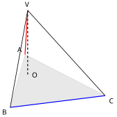
查看 TikZ 原始碼
\begin{document}
\begin{tikzpicture}[scale=1.5]
\coordinate (A) at (0.5,1.8);
\coordinate (B) at (0,0);
\coordinate (C) at (3.2,0.4);
\coordinate (O) at (0.59,1.09);
\coordinate (V) at (0.59,3.3);
\draw[fill=gray,opacity=0.18] (A) -- (B) -- (C) -- cycle;
\draw[dashed,very thick] (V) -- (O);
\draw[red,very thick] (V) -- (A);
\draw[blue,very thick] (B) -- (C);
\draw[thick] (V) -- (B);
\draw[thick] (V) -- (C);
\node[above left] at (0.5,1.8) {$A$};
\node[below left] at (0,0) {$B$};
\node[below right] at (3.25,0.38) {$C$};
\node[above] at (0.59,3.34) {$V$};
\node[right] at (0.65,1.1) {$O$};
\end{tikzpicture}
\end{document}设三角锥 $VABC$ 的顶点 $V$ 在底面 $ABC$ 所在平面上的投影为 $O$（即 $VO$ 垂直于底面所在平面、垂足为 $O$）。则 $VA \perp BC$ 且 $VB \perp CA$ $\iff$ $O$ 为 $\triangle ABC$ 的垂心（只须两组对棱垂直，第三组 $VC\perp AB$ 随垂心身份自动得到）。设定如图 32-53 所示。
图 32-53：定理（投影为垂心）的设定。
判据只管两组对棱（红 $VA$ 与蓝 $BC$ 为一组）。
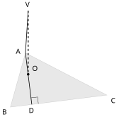
查看 TikZ 原始碼
\begin{document}
\begin{tikzpicture}[scale=1.5]
\coordinate (A) at (0.5,1.8);
\coordinate (B) at (0,0);
\coordinate (C) at (3.2,0.4);
\coordinate (O) at (0.59,1.09);
\coordinate (D) at (0.71,0.09);
\coordinate (V) at (0.59,3.2);
\draw[fill=gray,opacity=0.18] (A) -- (B) -- (C) -- cycle;
\draw[dashed,very thick] (V) -- (O);
\draw[thick] (V) -- (A);
\draw[thick] (A) -- (D);
\fill (0.59,1.09) circle (1.2pt);
\draw (0.928,0.117) -- (0.901,0.335) -- (0.683,0.308);
\node[left] at (0.44,1.85) {$A$};
\node[below left] at (0,0) {$B$};
\node[below right] at (3.25,0.38) {$C$};
\node[above] at (0.59,3.24) {$V$};
\node[above right] at (0.64,1.12) {$O$};
\node[below] at (0.71,0.05) {$D$};
\end{tikzpicture}
\end{document}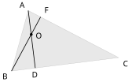
查看 TikZ 原始碼
\begin{document}
\begin{tikzpicture}[scale=1.5]
\coordinate (A) at (0.5,1.8);
\coordinate (B) at (0,0);
\coordinate (C) at (3.2,0.4);
\coordinate (O) at (0.59,1.09);
\coordinate (D) at (0.71,0.09);
\coordinate (F) at (0.87,1.61);
\draw[fill=gray,opacity=0.18] (A) -- (B) -- (C) -- cycle;
\draw[thick] (A) -- (D);
\draw[thick] (B) -- (F);
\fill (0.59,1.09) circle (1.2pt);
\node[above left] at (0.5,1.8) {$A$};
\node[below left] at (0,0) {$B$};
\node[below right] at (3.25,0.38) {$C$};
\node[right] at (0.64,1.05) {$O$};
\node[below] at (0.71,0.05) {$D$};
\node[above right] at (0.9,1.65) {$F$};
\end{tikzpicture}
\end{document}先看 $O$ 为垂心推出两组对棱垂直。 $O$ 为垂心，则 $AO \perp BC$（垂心在自顶点出发的高线上，Ch29 §29.3.3 的定义读法），构图如图 32-54 所示。
图 32-54：$O$ 在高线 $AD$ 上。
$VO$ 为竖杆、$VA$ 为斜线、$AO$ 为其投影；$AD\perp BC$ 于 $D$（直角记号处）。
把底面内的 $AD\perp BC$ 交回斜线：以 $VO$ 为竖杆、$VA$ 为斜线、$AO$ 为其投影，由三垂线定理（§32.2.7）得 $VA \perp BC$。同理 $BO \perp CA \implies VB \perp CA$。
再看两组对棱垂直推出 $O$ 为垂心。 前提 $VA \perp BC$；由三垂线定理（斜线为 $VA$、投影线为 $AO$）：$VA \perp BC \implies AO \perp BC$，即 $O$ 落在自 $A$ 出发的高线上。同理 $VB \perp CA \implies BO \perp CA$，$O$ 同时落在自 $B$ 出发的高线上，构图如图 32-55 所示。
图 32-55：两条高线交于 $O$。
$O$ 同时在 $AD$ 与 $BF$ 两条高线上，两高线交于一点。
两条高线的交点即垂心（Ch29 §29.3.3 的三条高共点定理保证第三条也过这一点），故 $O$ 为垂心。
两个方向各自闭合。
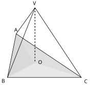
查看 TikZ 原始碼
\begin{document}
\begin{tikzpicture}[scale=1.5]
\coordinate (A) at (0.4,2);
\coordinate (B) at (0,0);
\coordinate (C) at (3.4,0);
\coordinate (O) at (1.267,0.667);
\coordinate (V) at (1.267,3.2);
\fill[gray,opacity=0.30] (A) -- (B) -- (O) -- cycle;
\fill[gray,opacity=0.18] (B) -- (C) -- (O) -- cycle;
\fill[gray,opacity=0.24] (C) -- (A) -- (O) -- cycle;
\draw[thick] (A) -- (B) -- (C) -- cycle;
\draw[dashed,very thick] (V) -- (O);
\draw[thick] (V) -- (A);
\draw[thick] (V) -- (B);
\draw[thick] (V) -- (C);
\node[above] at (0.4,2.02) {$A$};
\node[below left] at (0,0) {$B$};
\node[below right] at (3.45,-0.02) {$C$};
\node[above] at (1.267,3.24) {$V$};
\node[right] at (1.33,0.7) {$O$};
\end{tikzpicture}
\end{document}设三角锥 $VABC$ 的顶点 $V$ 在底面 $ABC$ 所在平面上的投影为 $O$（即 $VO$ 垂直于底面所在平面、垂足为 $O$）。则 $O$ 为 $\triangle ABC$ 的重心 $\iff$ 三条投影线把底面分成三等面积的小块，$S_{OAB} = S_{OBC} = S_{OCA}$。设定如图 32-56 所示。
图 32-56：定理（投影为重心）的设定。
投影点 $O$ 与三顶点连线把底面分成三块深浅不同的小三角形。
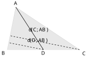
查看 TikZ 原始碼
\begin{document}
\begin{tikzpicture}[scale=1.5]
\coordinate (A) at (0.4,2);
\coordinate (B) at (0,0);
\coordinate (C) at (3.4,0);
\coordinate (D) at (1.7,0);
\draw[fill=gray,opacity=0.18] (A) -- (B) -- (C) -- cycle;
\draw[thick] (A) -- (D);
\draw[dashed,thick] (D) -- (0.065,0.326);
\draw[dashed,thick] (C) -- (0.131,0.653);
\node[above] at (0.4,2.02) {$A$};
\node[below left] at (0,0) {$B$};
\node[below right] at (3.45,-0.02) {$C$};
\node[below] at (1.7,0) {$D$};
\node[above right] at (0.86,0.22) {$d(D,AB)$};
\node[above right] at (0.92,0.72) {$d(C,AB)$};
\end{tikzpicture}
\end{document}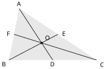
查看 TikZ 原始碼
\begin{document}
\begin{tikzpicture}[scale=1.5]
\coordinate (A) at (0.4,2);
\coordinate (B) at (0,0);
\coordinate (C) at (3.4,0);
\coordinate (O) at (1.267,0.667);
\coordinate (D) at (1.7,0);
\coordinate (E) at (1.9,1);
\coordinate (F) at (0.2,1);
\fill[gray,opacity=0.18] (A) -- (B) -- (C) -- cycle;
\draw[thick] (A) -- (D);
\draw[thick] (B) -- (E);
\draw[thick] (C) -- (F);
\fill (1.267,0.667) circle (1.3pt);
\node[above] at (0.4,2.02) {$A$};
\node[below left] at (0,0) {$B$};
\node[below right] at (3.45,-0.02) {$C$};
\node[below] at (1.7,0) {$D$};
\node[right] at (1.98,1.02) {$E$};
\node[left] at (0.18,1.02) {$F$};
\node[above right] at (1.32,0.7) {$O$};
\end{tikzpicture}
\end{document}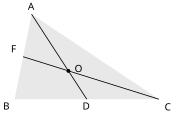
查看 TikZ 原始碼
\begin{document}
\begin{tikzpicture}[scale=1.5]
\coordinate (A) at (0.4,2);
\coordinate (B) at (0,0);
\coordinate (C) at (3.4,0);
\coordinate (O) at (1.267,0.667);
\coordinate (D) at (1.7,0);
\coordinate (F) at (0.2,1);
\fill[gray,opacity=0.18] (A) -- (B) -- (C) -- cycle;
\draw[thick] (A) -- (D);
\draw[thick] (C) -- (F);
\fill (1.267,0.667) circle (1.3pt);
\node[above] at (0.4,2.02) {$A$};
\node[below left] at (0,0) {$B$};
\node[below right] at (3.45,-0.02) {$C$};
\node[below] at (1.7,0) {$D$};
\node[above left] at (0.18,1.02) {$F$};
\node[right] at (1.33,0.72) {$O$};
\end{tikzpicture}
\end{document}先立一个等面积线的引理：在 $\triangle ABC$ 内，点 $X$ 满足 $S_{XAB} = S_{XAC}$ 当且仅当 $X$ 在自 $A$ 出发的中线上。引理的理由有两步。
第一步：设 $D$ 为 $BC$ 的中点。$B$ 沿直线 $BC$ 到顶点 $C$ 的中点到直线 $AB$ 的距离，按沿线段的比例变化（Ch8 的中点与比例读法），故 $D$ 到直线 $AB$ 的距离是 $C$ 到直线 $AB$ 距离的一半；同理 $D$ 到直线 $AC$ 的距离是 $B$ 到直线 $AC$ 距离的一半。构型如图 32-57 所示，于是两块面积
图 32-57：等面积线引理的底图。
两条虚线是 $D$、$C$ 到直线 $AB$ 的距离，后者恰是前者的两倍，故 $S_{DAB}=\tfrac12 S_{ABC}$。
$$\begin{aligned} S_{DAB} &= \tfrac{1}{2}AB \cdot d(D,AB) = \tfrac{1}{4}AB \cdot d(C,AB) = \tfrac{1}{2}S_{ABC} \\ S_{DAC} &= \tfrac{1}{2}AC \cdot d(D,AC) = \tfrac{1}{2}S_{ABC} \end{aligned}$$
全同，故 $D$ 满足等式。第二步：$S_{XAB}$ 与 $S_{XAC}$ 都是关于点 $X$ 位置的线性函数（沿任何直线按速率比例增减），两线性函数取等值的解集是一条直线，且它同时经过 $A$（两点重合时等面积成立）与 $D$，故这条直线正是中线 $AD$。
现在主链第一个方向。先看 $O$ 为重心推出三等面积。 $O$ 为重心 ⟹ $O$ 在三条中线上（三中线共点，Ch29 §29.3.3），构图如图 32-58 所示。$O$ 在自 $A$ 出发的中线上 ⟹ $S_{OAB} = S_{OCA}$（引理）；同理 $S_{OAB} = S_{OBC}$、$S_{OBC} = S_{OCA}$，故三块等面积。
图 32-58：重心在三条中线上。
三条中线 $AD$、$BE$、$CF$ 共点于 $O$。
再看三等面积推出 $O$ 为重心。 三块等面积给出三组两两等式，由引理换读：等式 $S_{OAB} = S_{OAC}$ 说明 $O$ 在自 $A$ 出发的中线上；$S_{OAB} = S_{OBC}$ 说明 $O$ 在自 $C$ 出发的中线上，构图如图 32-59 所示。两条中线在三角形内相交于一点，这一点就是重心（三中线共点，Ch29 §29.3.3），故 $O$ 为重心。
图 32-59：两条中线的交点。
$O$ 同时在中线 $AD$ 与 $CF$ 上，两线交于唯一一点。
两个方向各自闭合。
汇总表：四种投影位置与它们的等价条件、关键工具如下。
| 等价条件 | 关键工具 | |
|---|---|---|
| 外心 | 三维毕氏引理（毕氏三连） | |
| 内心 | 三垂线定理 ＋ 毕氏链 | |
| 垂心 | 两组对棱垂直 | 三垂线定理（双向各用一次） |
| 重心 | 底面被分成三等面积小块 | 等面积线引理 ＋ 中线共点 |
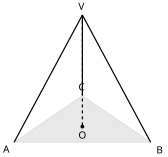
查看 TikZ 原始碼
\begin{document}
\begin{tikzpicture}[scale=1.5]
\coordinate (A) at (0,0);
\coordinate (B) at (3.2,0);
\coordinate (C) at (1.6,1.1);
\coordinate (O) at (1.6,0.37);
\coordinate (V) at (1.6,3);
\draw[fill=gray,opacity=0.18] (A) -- (B) -- (C) -- cycle;
\draw[dashed,very thick] (V) -- (O);
\draw[very thick] (V) -- (A);
\draw[very thick] (V) -- (B);
\draw[very thick] (V) -- (C);
\fill (1.6,0.37) circle (1.3pt);
\node[below left] at (0,0) {$A$};
\node[below right] at (3.25,-0.02) {$B$};
\node[above] at (1.6,1.14) {$C$};
\node[above] at (1.6,3.04) {$V$};
\node[below] at (1.6,0.33) {$O$};
\end{tikzpicture}
\end{document}设三角锥 $VABC$ 的底面 $\triangle ABC$ 为等边三角形，三条侧棱等长（$VA = VB = VC$），$O$ 为顶点 $V$ 在底面 $ABC$ 所在平面上的投影。则 $O$ 同时是底面的外心、内心、垂心与重心（四心合一）。设定如图 32-60 所示。
图 32-60：正三棱锥的四心合一。
投影点 $O$ 是底面等边三角形四心的公共点。
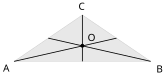
查看 TikZ 原始碼
\begin{document}
\begin{tikzpicture}[scale=1.5]
\coordinate (A) at (0,0);
\coordinate (B) at (3.2,0);
\coordinate (C) at (1.6,1.1);
\coordinate (O) at (1.6,0.37);
\coordinate (D) at (2.4,0.55);
\coordinate (E) at (0.8,0.55);
\draw[fill=gray,opacity=0.18] (A) -- (B) -- (C) -- cycle;
\draw[thick] (A) -- (D);
\draw[thick] (B) -- (E);
\draw[thick] (C) -- (1.6,0);
\fill (1.6,0.37) circle (1.3pt);
\node[below left] at (0,0) {$A$};
\node[below right] at (3.25,-0.02) {$B$};
\node[above] at (1.6,1.14) {$C$};
\node[above right] at (1.64,0.4) {$O$};
\end{tikzpicture}
\end{document}底面为等边三角形时四心合一（Ch29 §29.3 的等边三角形读法），构图如图 32-61 所示；三条侧棱等长由定理（投影为外心）给出 $O$ 为外心。外心是等边三角形四心的公共点，故 $O$ 同时为其余三心。
图 32-61：等边三角形的三中线即三高线。
三条线既是中线也是高线（兼垂直平分线与角平分线），共点于中心 $O$。
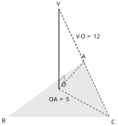
查看 TikZ 原始碼
\begin{document}
\begin{tikzpicture}[scale=1.5]
\coordinate (A) at (3.0,2.2);
\coordinate (B) at (0,0);
\coordinate (C) at (4.0,0);
\coordinate (O) at (2.0,1.1);
\coordinate (V) at (2.0,4.3);
\draw[fill=gray,opacity=0.18] (A) -- (B) -- (C) -- cycle;
\draw[very thick] (V) -- (O);
\draw[dashed,thick] (O) -- (A);
\draw[dashed,thick] (O) -- (C);
\draw[dashed,thick] (V) -- (A);
\draw[dashed,thick] (V) -- (C);
\draw (2,1.42) -- (2.215,1.657) -- (2.215,1.337);
\node[above] at (3.0,2.24) {$A$};
\node[below left] at (0,0) {$B$};
\node[below right] at (4.0,-0.05) {$C$};
\node[above right] at (2.02,1.12) {$O$};
\node[above] at (2.0,4.34) {$V$};
\node[right] at (2.6,3.2) {$VO = 12$};
\node[below] at (2.0,0.85) {$OA = 5$};
\end{tikzpicture}
\end{document}三角锥 $VABC$ 的底面为直角三角形 $ABC$，两直角边 $AB = 6$、$BC = 8$（$\angle ABC = 90^\circ$）；三条侧棱相等，$VA = VB = VC = 13$。求：
(a) 顶点 $V$ 到底面的锥高；
(b) 侧棱 $VA$ 与底面的线面角的余弦值。
解：
(a) 三条侧棱等长，由定理（投影为外心），投影 $O$ 为底面外心（构形如图 32-62 所示）。直角三角形的外心在斜边的中点（Ch29 §29.3.2），故 $O$ 是线段 $\overline{AC}$ 的中点，且
$$\begin{aligned} OA &= \frac{AC}{2} = \frac{\sqrt{6^2 + 8^2}}{2} = \frac{10}{2} = 5 \end{aligned}$$
由三维毕氏引理：
$$\begin{aligned} VO^2 &= VA^2 - OA^2 = 169 - 25 = 144 \\ VO &= 12 \end{aligned}$$
故锥高为 $12$。
底面构形与锥高如图 32-62 所示。
图 32-62：示例的底面构形。$O$ 为斜边 $AC$ 的中点（直角三角形的外心），灰色三角形为底面；锥高 $VO = 12$ 与投影半径 $OA = 5$ 构成 5-12-13 的两直角边。
(b) 侧棱与底面的线面角即 $\angle VAO$，由三角比：
$$\begin{aligned} \cos\angle VAO &= \frac{OA}{VA} \\ &= \dfrac{5}{13} \end{aligned}$$
这里的 $\dfrac{5}{13}$ 与 (a) 算得的 $VO = 12$、斜棱 $VA = 13$ 同属一个 5-12-13 直角三角形，两问互相印证。
四面体 $VABC$ 中，$VO \perp$ 底面 $ABC$（$O$ 为 $V$ 的投影），且 $VA \perp BC$、$VB \perp CA$。求证：$VC \perp AB$。
解：
由三垂线定理（§32.2.7 方向二，斜线为 $VA$）：$VA \perp BC \implies AO \perp BC$，即 $O$ 在自 $A$ 出发的高线上；同理 $OB \perp CA$，$O$ 同时在自 $B$ 出发的高线上。两条高线的交点即垂心（三高共点，Ch29 §29.3.3），故 $CO \perp AB$。再由三垂线定理（方向一，斜线为 $VC$、投影线为 $CO$）：$CO \perp AB \implies VC \perp AB$。
32.3.3 面积的投影（Projection of Area）
§32.2.3 把「直线」投到平面上；若把整个三角形从斜面投向平面，得到的效果更漂亮：面积按
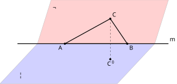
查看 TikZ 原始碼
\begin{document}
\begin{tikzpicture}[scale=1.5]
\fill[blue, opacity=0.18] (0.5,0.9) -- (5.2,0.9) -- (3.7,-0.7) -- (-1.0,-0.7) -- cycle;
\fill[red, opacity=0.18] (0.5,0.9) -- (5.2,0.9) -- (5.75,2.65) -- (1.05,2.65) -- cycle;
\draw[gray!60] (0.5,0.9) -- (5.2,0.9) -- (3.7,-0.7) -- (-1.0,-0.7) -- cycle;
\draw[gray!60] (0.5,0.9) -- (5.2,0.9) -- (5.75,2.65) -- (1.05,2.65) -- cycle;
\draw[very thick] (-0.3,0.9) -- (5.75,0.9);
\draw[very thick] (1.6,0.9) -- (3.42,1.90) -- (4.1,0.9) -- cycle;
\draw[dashed] (3.42,1.90) -- (3.42,0.28);
\fill (3.42,0.28) circle (1.2pt) node[below] {$C'$};
\fill (3.42,1.90) circle (1.2pt) node[above right] {$C$};
\fill (1.6,0.9) circle (1.2pt) node[below left] {$A$};
\fill (4.1,0.9) circle (1.2pt) node[below right] {$B$};
\node[right] at (5.72,1.05) {$m$};
\node at (-0.15,-0.35) {$\Pi$};
\node at (1.2,2.35) {$\Omega$};
\end{tikzpicture}
\end{document}设平面 $\Pi$ 与 $\Omega$ 相交于直线 $m$，$\triangle ABC$ 整个落在 $\Omega$ 内，且边 $AB$ 恰好落在 $m$ 上；记 $\varphi\in(0^\circ,90^\circ]$ 为沿 $m$ 的二面角的值。
把三角形逐点投向 $\Pi$：
- $A$、$B$ 都在 $\Pi$ 内，投影不变；
- $C$ 的投影记作 $C'$，即 $C$ 在 $\Pi$ 内的垂足（§32.2.1）。
由于投影把线段映成线段（遵从直觉），整个三角形的投影就是以三个像点为顶点的三角形，称它为投影三角形 $\triangle ABC'$。则
$$S_{ABC'}=S_{ABC}\cos\varphi.$$
此构型如图 32-63 所示。
图 32-63：两平面 $\Pi$、$\Omega$ 沿直线 $m$ 相交。 $\triangle ABC$ 落在 $\Omega$ 内、边 $AB$ 在 $m$ 上。 虚线 $CC'\perp\Pi$，$C'$ 是 $C$ 在 $\Pi$ 内的投影。
查看 TikZ 原始碼
\begin{document}
\begin{tikzpicture}[scale=1.5]
\draw[thick] (-1.0,0) -- (3.2,0);
\draw[very thick] (0,0) -- (1.7207,2.4575);
\draw[very thick] (0,0) -- (1.7207,0);
\draw[dashed] (1.7207,2.4575) -- (1.7207,0);
\draw (1.7207,0.17) -- (1.5407,0.17) -- (1.5407,0);
\draw (0.7,0) arc (0:55:0.7);
\node at (0.92,0.42) {$\varphi$};
\fill (0,0) circle (1.4pt) node[below left] {$D$};
\fill (1.7207,2.4575) circle (1.2pt) node[above right] {$C$};
\fill (1.7207,0) circle (1.2pt) node[below right] {$C'$};
\node at (2.9,0.28) {$\Pi$};
\node at (1.02,1.75) {$\Omega$};
\end{tikzpicture}
\end{document}设平面 $\Pi$、$\Omega$ 相交于直线 $m$，$\triangle ABC$ 落在 $\Omega$ 内、边 $AB$ 恰好落在 $m$ 上，$C'$ 为 $C$ 在 $\Pi$ 内的投影，$\varphi\in(0^\circ,90^\circ]$ 为沿 $m$ 的二面角的值；$\triangle ABC$ 不退化，故 $C$ 不在 $m$ 上。
定垂足。 在 $\Omega$ 内自 $C$ 向 $m$ 作垂线，垂足为 $D$（垂足存在而且唯一，遵从直觉），于是 $CD\perp m$ 且 $CD\subset\Omega$。直线 $AB$ 与直线 $m$ 是同一条直线（两点 $A$、$B$ 都在 $m$ 上），故 $C$ 到直线 $AB$ 的距离正是垂线段 $\overline{CD}$ 的长；三角形面积的底高公式取高为到对边所在直线的距离，得
$$S_{ABC}=\frac{1}{2}AB\cdot CD.$$
取截面。 $C'$ 是 $C$ 在 $\Pi$ 内的投影，故 $CC'\perp\Pi$（§32.2.1），从而 $CC'$ 垂直于 $\Pi$ 内的每一条直线、特别是 $CC'\perp m$。设 $\Xi$ 为由相交于 $C$ 的两直线 $CD$ 与 $CC'$ 所确定的平面；这两条直线都垂直于 $m$，由垂直判据（§32.2.2）得 $m\perp\Xi$。把 $\Xi$ 当作一张平面图来看：$D$ 与 $C'$ 都落在 $\Xi$ 内，故直线 $C'D$ 落在 $\Xi$ 内，且 $m$ 与 $\Xi$ 只在一点 $D$ 相遇（一条直线与一个平面或者只交于一点，或者整条落在平面内，而 $m$ 不落在 $\Xi$ 内，遵从直觉），因此 $C'D\perp m$；又 $D$、$C'$ 都在 $\Pi$ 内，直线 $C'D$ 便在 $\Pi$ 内、过 $D$ 且垂直于 $m$，如图 32-64 所示。
图 32-64：截面 $\Xi$ 内的平面图。 $DC$ 落在 $\Omega$ 内、$DC'$ 落在 $\Pi$ 内，两者在 $D$ 处都垂直于 $m$，夹角 $\varphi=\angle CDC'$ 即二面角的平面角。 虚线 $CC'\perp\Pi$，$\triangle CC'D$ 以 $C'$ 为直角顶点。
读二面角。 射线 $DC$（在 $\Omega$ 内）与射线 $DC'$（在 $\Pi$ 内）都自 $D$ 出发且都垂直于 $m$，由平面角的定义（§32.2.6），
$$\varphi=\angle CDC',$$
正是该二面角的值；平面角的值不随取点改变（§32.2.6），而 $\triangle CC'D$ 以 $C'$ 为直角顶点又自动把 $\varphi$ 放进 $0^\circ$ 与 $90^\circ$ 之间，与口径一致。再由 $CC'\perp\Pi$：直线 $CC'$ 垂直于 $\Pi$ 内过 $C'$ 的直线 $DC'$，故 $\triangle CC'D$ 是直角三角形（直角在 $C'$）。由三维毕氏引理（§32.2.1，取 $D\in\Pi$）：
$$CD^2=CC'^2+C'D^2.$$
同一三角形中，角 $\varphi$ 的邻边是 $C'D$、斜边是 $CD$，由 §9.1.2 的余弦定义得
$$\begin{aligned} \cos\varphi&=\frac{C'D}{CD}\\ C'D&=CD\cos\varphi \end{aligned}$$
回到面积。 $A$、$B$ 都在 $\Pi$ 内，投影不变，投影三角形就是 $\triangle ABC'$；以 $AB$ 为底，$C'$ 到直线 $m$（即直线 $AB$）的垂线段是 $C'D$，于是
$$\begin{aligned} S_{ABC'}&=\frac{1}{2}AB\cdot C'D\\ &=\frac{1}{2}AB\cdot CD\cos\varphi\\ &=S_{ABC}\cos\varphi \end{aligned}$$
以上设 $0^\circ<\varphi<90^\circ$；当 $\varphi=90^\circ$（$\Omega\perp\Pi$）时投影退化为线段 $\overline{AB}$ 而 $C'$ 与 $D$ 重合，两块面积都是 $0$，公式仍然成立。
- 由两块面积反求二面角。 把定理倒过来用：$\cos\varphi=\dfrac{S_{ABC'}}{S_{ABC}}$。量得斜面上图形的面积与其投影面积，相除即得 $\cos\varphi$，再用 §9.4.1 的反三角比记号读出 $\varphi$；全程不必在图中构造二面角的平面角。§32.2.6 的取点手法在等腰侧面上最顺手（中线即高）；侧面不是等腰三角形、或构型不便取点时，本法尤其省事。
- 锥体的侧面天然适用。 侧面三角形（例如三棱锥的侧面 $\triangle VAB$）与底面所在平面的公共交线正是它的底边 $AB$，条件「一边落在 $m$ 上」自动满足，故把侧面向底面投影时可直接使用本定理。
- 一般情形。 若三边都不落在 $m$ 上，结论 $S_{ABC'}=S_{ABC}\cos\varphi$ 仍然成立；证明要用到剖分或其他技巧，此处不展开。
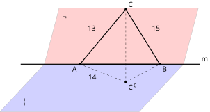
查看 TikZ 原始碼
\begin{document}
\begin{tikzpicture}[scale=1.5]
\fill[blue, opacity=0.18] (0.5,0.9) -- (5.2,0.9) -- (3.7,-0.7) -- (-1.0,-0.7) -- cycle;
\fill[red, opacity=0.18] (0.5,0.9) -- (5.2,0.9) -- (5.7,2.8) -- (1.0,2.8) -- cycle;
\draw[gray!60] (0.5,0.9) -- (5.2,0.9) -- (3.7,-0.7) -- (-1.0,-0.7) -- cycle;
\draw[gray!60] (0.5,0.9) -- (5.2,0.9) -- (5.7,2.8) -- (1.0,2.8) -- cycle;
\draw[very thick] (-0.3,0.9) -- (5.75,0.9);
\draw[very thick] (1.7,0.9) -- (3.25,2.75) -- (4.4,0.9) -- cycle;
\draw[dashed] (3.25,2.75) -- (3.25,0.30);
\draw[dashed] (1.7,0.9) -- (3.25,0.30) -- (4.4,0.9);
\fill (1.7,0.9) circle (1.2pt) node[below left] {$A$};
\fill (4.4,0.9) circle (1.2pt) node[below right] {$B$};
\fill (3.25,2.75) circle (1.2pt) node[above right] {$C$};
\fill (3.25,0.30) circle (1.2pt) node[below right] {$C'$};
\node[above left] at (2.28,1.95) {$13$};
\node[above right] at (4.05,1.95) {$15$};
\node[below] at (2.1,0.62) {$14$};
\node[right] at (5.72,1.05) {$m$};
\node at (-0.15,-0.35) {$\Pi$};
\node at (1.2,2.5) {$\Omega$};
\end{tikzpicture}
\end{document}一斜坡的表面通过平面 $\Omega$，水平面为 $\Pi$，两者相交于水平直线 $m$。斜坡上三角形板 $\triangle ABC$ 的边 $AB$ 恰好沿 $m$ 铺设，且 $CA=13$ m、$CB=15$ m、$AB=14$ m；斜坡与水平面所成的二面角为 $60^\circ$。求：
(a) $\triangle ABC$ 的面积（用 §32.1.4 的希罗公式）；
(b) $\triangle ABC$ 的投影三角形的面积；
(c) 点 $C$ 到水平面 $\Pi$ 的距离。
构型如图 32-65 所示。
图 32-65：示例的构型（长度以 m 计）。 $\triangle ABC$ 的边 $AB$ 恰落在棱 $m$ 上，$CA=13$ m、$CB=15$ m。 虚线部分是待求的投影三角形 $\triangle ABC'$ 与高度线段 $C$ 到水平面的距离线段 $\overline{CC'}$。
(a) 记周长为 $p$。由 §32.1.4 的希罗公式：
$$\begin{aligned} p&=CA+CB+AB=13+15+14=42\\ S_{ABC}&=\frac{1}{4}\sqrt{p(p-2CA)(p-2CB)(p-2AB)}\\ &=\frac{1}{4}\sqrt{42\times16\times12\times14}\\ &=\frac{1}{4}\sqrt{84^2\times16}\\ &=\frac{1}{4}\times84\times4\\ &=84(\text{m}^2) \end{aligned}$$
(b) $A$、$B$ 都在水平面 $\Pi$ 内，投影不变，投影三角形是 $\triangle ABC'$。由面积投影定理：
$$\begin{aligned} S_{ABC'}&=S_{ABC}\cos 60^\circ\\ &=84\times\frac{1}{2}\\ &=42(\text{m}^2) \end{aligned}$$
(c) 在 $\Omega$ 内自 $C$ 向 $m$ 作垂线，垂足为 $D$。以 $AB$ 为底、$CD$ 为高：$S_{ABC}=\dfrac{1}{2}AB\cdot CD$，故 $CD=2\times84\div14=12$。$C'$ 是 $C$ 在 $\Pi$ 内的投影，故 $CC'\perp\Pi$，而直线 $DC'$ 落在 $\Pi$ 内且过 $C'$，得 $\angle CC'D=90^\circ$；射线 $DC$ 与 $DC'$ 都在 $D$ 处垂直于 $m$，故 $\angle CDC'$ 是二面角的平面角（§32.2.6），$\angle CDC'=60^\circ$。在直角三角形 $\triangle CC'D$ 中：
$$\begin{aligned} CC'&=CD\sin 60^\circ\\ &=12\times\frac{\sqrt{3}}{2}\\ &=6\sqrt{3}(\text{m}) \end{aligned}$$
即点 $C$ 到水平面的距离为 $6\sqrt{3}$ m（约 $10.4$ m）。
32.4 延伸：空间中的向量 (Extension: Vectors in Space)
本节难度上限：T B+ ｜ C C+ ｜ E B- ｜ Q B-
本节所用到的向量概念超出常规课程的要求，作延伸阅读；向量在高中延伸模块 M2 的学习重点里自成体系，此处只给出三维的坐标层与方向层的最小工具，不展开 M2 的完整运算。
前文求空间角度走的是几何路线（投影、三垂线、截面对照）。本节给出与之平行的代数路线：把方向信息装进一个坐标三元组，靠内积一次读出两方向的夹角与垂直关系。读者可以用两条路线互相核对。
32.4.1 三维坐标系与向量的坐标表示
在空间中取定点
查看 TikZ 原始碼
\begin{document}
\begin{tikzpicture}[scale=1.5]
\coordinate (O) at (0,0);
\coordinate (Xp) at (2.6,0);
\coordinate (Yp) at (3.0,1.15);
\coordinate (Zp) at (0,2.5);
\draw[very thick,->] (O) -- (Xp);
\draw[very thick,->] (O) -- (Yp);
\draw[very thick,->] (O) -- (Zp);
\node[below] at (2.6,-0.05) {$x$};
\node[right] at (3.05,1.2) {$y$};
\node[left] at (-0.08,2.5) {$z$};
\node[below left] at (-0.06,-0.06) {$O$};
\end{tikzpicture}
\end{document}图 32-66：三维坐标架。三条轴互相垂直、共点于原点
。
在此坐标系下，空间中每一点
两点
证明思路与平面情形一致：过
空间中以 $A$ 为起点、$B$ 为终点的有向线段称为三维向量，记作 $\overrightarrow{AB}$。在三维直角坐标系下，若 $A(a_1, a_2, a_3)$、$B(b_1, b_2, b_3)$，则 $\overrightarrow{AB}$ 的坐标为
$$\overrightarrow{AB} = (b_1-a_1, b_2-a_2, b_3-a_3)$$
其模（magnitude）记作 $\lvert\overrightarrow{AB}\rvert$，即线段 $\overline{AB}$ 的长度 $AB$。平移后指向与模都不变的两条有向线段，在向量语言中被视为同一对象（这一点遵从直觉，与平移不改变方向与长度的直观一致）。
32.4.2 内积与两向量的夹角
设非零向量 $\vec{a}$、$\vec{b}$。把它们的起点移到同一点后，两条有向线段所在射线构成 $[0^\circ, 180^\circ]$ 内的角，称为 $\vec{a}$ 与 $\vec{b}$ 的夹角，记作 $\angle(\vec{a}, \vec{b})$。本书角度制记号沿用全册约定（角度以度计）。
设 $\vec{a} = (a_1, a_2, a_3)$、$\vec{b} = (b_1, b_2, b_3)$。它们的内积记作 $\vec{a} \cdot \vec{b}$，定义为
$$\vec{a} \cdot \vec{b} = a_1b_1 + a_2b_2 + a_3b_3$$
内积是一个实数，不是向量。
对非零向量 $\vec{a}$、$\vec{b}$，设其夹角为 $\theta$，则
$$\cos\theta = \dfrac{\vec{a} \cdot \vec{b}}{\lvert\vec{a}\rvert \lvert\vec{b}\rvert}$$
设 $\vec{a} = (a_1, a_2, a_3)$、$\vec{b} = (b_1, b_2, b_3)$，两者以同一起点放置，终点分别为 $A$、$B$。
由余弦公式（§32.1.2）用在三角形 $OAB$：
$$\lvert\overrightarrow{BA}\rvert^2 = \lvert\vec{a}\rvert^2 + \lvert\vec{b}\rvert^2 - 2\lvert\vec{a}\rvert\lvert\vec{b}\rvert\cos\theta$$
另一方面，两端点的三点组 $A$、$B$ 与同一起点的坐标差给出
$$\lvert\overrightarrow{BA}\rvert^2 = (a_1-b_1)^2 + (a_2-b_2)^2 + (a_3-b_3)^2$$
把第一式右端展开并与第二式比对同类项：
$$\begin{aligned} & a_1^2 + a_2^2 + a_3^2 + b_1^2 + b_2^2 + b_3^2 - 2\lvert\vec{a}\rvert\lvert\vec{b}\rvert\cos\theta \\ &= a_1^2 + a_2^2 + a_3^2 + b_1^2 + b_2^2 + b_3^2 - 2(a_1b_1 + a_2b_2 + a_3b_3) \end{aligned}$$
两边消去共同的六个平方项，得 $\lvert\vec{a}\rvert\lvert\vec{b}\rvert\cos\theta = a_1b_1 + a_2b_2 + a_3b_3 = \vec{a}\cdot\vec{b}$，移项即得结论。
32.4.3 正交条件与内积的基本性质
若 $\vec{a}$、$\vec{b}$ 均非零且 $\vec{a} \cdot \vec{b} = 0$，则称 $\vec{a}$ 与 $\vec{b}$ 正交，记作 $\vec{a} \perp \vec{b}$。
由内积与夹角公式与分母 $\lvert\vec{a}\rvert\lvert\vec{b}\rvert$ 恒正，立得正交条件与夹角公式的联系：$\vec{a} \perp \vec{b} \iff \cos\angle(\vec{a}, \vec{b}) = 0 \iff \vec{a}\cdot\vec{b} = 0$（零向量不参与此定义）。
对向量 $\vec{a}$、$\vec{b}$、$\vec{c}$ 与实数 $k$：
$$\begin{aligned} \vec{a}\cdot\vec{b} &\equiv \vec{b}\cdot\vec{a} \\ \vec{a}\cdot(\vec{b} + \vec{c}) &\equiv \vec{a}\cdot\vec{b} + \vec{a}\cdot\vec{c} \\ (k\vec{a})\cdot\vec{b} &\equiv k(\vec{a}\cdot\vec{b}) \end{aligned}$$
三条都设 $\vec{a} = (a_1, a_2, a_3)$、$\vec{b} = (b_1, b_2, b_3)$、$\vec{c} = (c_1, c_2, c_3)$，按坐标定义直接展开：第一条由实数乘法的交换律按分量给出；第二条由实数乘法对加法的分配律按分量给出；第三条由乘法结合律按分量给出。三式均对全部坐标取值成立，故用恒等号。
32.4.4 用向量求空间两直线的夹角
向量方法与 §32.2.5 的交角定义对接如下：
- 两条直线（相交或异面）各取一个方向向量，两直线的交角就是两方向向量夹角取
- 若坐标计算给出的是
一个长方体中，从同一顶点 $O$ 出发的三条棱的方向分别是 $\overrightarrow{OA} = (2, 0, 0)$、$\overrightarrow{OB} = (0, 3, 0)$、$\overrightarrow{OC} = (0, 0, 1)$。求体对角线 $\overrightarrow{OD} = (2, 3, 1)$（$D(2, 3, 1)$ 为对角线终点）与棱 $\overrightarrow{OC}$ 的交角。
解：
$$\begin{aligned} \overrightarrow{OD} \cdot \overrightarrow{OC} &= 2\cdot 0 + 3\cdot 0 + 1\cdot 1 = 1 \\ \lvert\overrightarrow{OD}\rvert &= \sqrt{2^2 + 3^2 + 1^2} = \sqrt{14} \\ \lvert\overrightarrow{OC}\rvert &= 1 \end{aligned}$$
$$\cos\theta = \dfrac{1}{\sqrt{14}\cdot 1} = \dfrac{1}{\sqrt{14}}$$
故交角 $\theta = \arccos\dfrac{1}{\sqrt{14}} \approx 74.5^\circ$。与 §32.3.1 用几何方法（投影＋直角三角形）算得的同型结果互相印证。
附记：向量的坐标写法依赖「三轴互相垂直」的现成坐标架；对斜置图形（如一般四面体），选轴成本常高于几何路线成本。向量体系在 M2 的相应学习重点里续作完整展开。
32.5 小结 (Summary)
- 解三角形的工具箱（§32.1）：SAS 面积公式
- 投影与垂直（§32.2.1–32.2.2）：直线垂直于平面的定义只动用线线垂直（与平面上所有过垂足的直线垂直）；三维毕氏引理
- 投影的形状与线面角（§32.2.3–32.2.4；拓展阅读 §32.2.8）：直线的投影分三种情形（自含／一点／直线），主线按直观接受，§32.2.8 给出完整证明；斜线与其投影所成的角即线面角，
- 空间两直线与两平面（§32.2.5–32.2.6）：异面直线是平面几何之外的第三种位置关系；两直线交角按平移到共点定义；两点/点到直线的距离由垂线段承载；两平面相交时二面角由平面角度量，平面角沿棱任取一点本质不变。
- 三垂线定理（§32.2.7）：
- 常见几何体的求角（§32.3.1）：正方体的体对角线线面角
- 四心投影（§32.3.2，扩展阅读）：投影为外心 ⟺ 三侧棱等长；投影为内心 ⟺ 顶点到底面三边等距（并且 ⟺ 三侧面与底面成等角）；投影为垂心 ⟺ 两组对棱垂直；投影为重心 ⟺ 底面被分成三等面积小块；正三棱锥中四心合一。
- 面积投影法（§32.3.3，扩展阅读）：三角形的一条边恰好住在两平面交线上时，投影面积乘上
- 空间向量（§32.4，延伸阅读）：三维坐标架上的有向线段用坐标三元组承装；内积把两向量的夹角一次读出，正交条件
- 正弦公式的 SSA 情形（已知两边及其中一边的对角）可能给出两个三角形，解完一道要检查有没有漏解；
- 三垂线定理的使用要把「一竖一影」三线齐全核实后才引用；
- 二面角的平面角取值 $[0^\circ, 180^\circ]$，应用题中「内二面角」与「锐角的二面角度量」要按图所选一侧判断。
中英对照词汇表（Glossary）
| 中文 | English | 记号与公式 | 备注 | |
|---|---|---|---|---|
| 解三角形 | Solving a Triangle | 知三边/两角边/两边一角求其余元素 | 必修学习单位「續三角学」的官方重点族 | |
| 三角形面积公式 | Area Formula | 对称形式各一条（§32.1.1） | ||
| 希罗公式 | Heron's Formula | |||
| 余弦公式 | Cosine Formula | 知三边求角由其移项（§32.1.2） | ||
| 正弦公式 | Sine Formula | SSA 情形可能两解（§32.1.3） | ||
| 外接圆半径 | Circumradius | 由 [[Chapter 29 平面几何 (II) | Ch29]] 外接圆语言（§32.1.3） | |
| 投影 | Projection | 点的投影＝垂足；直线的投影＝逐点投影的集合 | 亦指正投影（§32.2.1/2.2.3） | |
| 垂足（线面） | Foot | 存在唯一遵从直觉（§32.2.1） | ||
| 点到平面的距离 | Distance to a Plane | 垂线段最短（§32.2.1） | ||
| 三维毕氏引理 | Spatial Pythagorean Lemma | 全章空间计算的发动机（§32.2.1） | ||
| 直线垂直于平面 | Line ⊥ Plane | 定义按线线垂直展开（§32.2.1） | ||
| 直线与平面平行 | Line Parallel to a Plane | 初中直观接手（§32.2.3） | ||
| 垂直判据 | Perpendicular Criterion | 与两条相交平面内线 ⊥ ⟺ ⊥ Π | 初中已认识；自标增润（§32.2.2） | |
| 投影刻画 | Projection Characterization | 双向证明（§32.2.2） | ||
| 斜线 | Oblique line | 与 |
斜足＝交点（§32.2.4） | |
| 线面角 | Angle between a Line and a Plane | 倾角是它在斜面上的说法（§32.2.4） | ||
| 最大斜率线 | Line of Greatest Slope | 斜面上与坡脚线垂直的斜线 | 它与水平面的线面角＝倾角 | |
| 异面直线 | Skew Lines | 不共面、不相交、不平行 | 空间第三种位置关系（§32.2.5） | |
| 两直线交角 | Angle between Two Lines | 平移到共点后的 |
与取点无关（§32.2.5） | |
| 点到直线的距离（空间） | Distance to a Line in Space | 垂线段长 | 垂足存在唯一（§32.2.5） | |
| 棱 | Edge | 两相交平面的交线 | 二面角按棱的另一名呼（§32.2.6） | |
| 二面角 | Dihedral Angle | 平面角取值 |
常考锐角或其补度（§32.2.6） | |
| 平面角 | Plane Angle | 与取点无关（§32.2.6） | ||
| 三垂线定理 | Theorem of Three Perpendiculars | 设定一竖一影一斜三线（§32.2.7） | ||
| 四心 | Four Centres | 回指 [[Chapter 29 平面几何 (II) | Ch29]] §29.3（§32.3.2） | |
| 等面积线 | Equal-Area Line | §32.3.2 的引理 | ||
| 面积投影定理 | Area Projection Theorem | 一边在棱上的三角形式（§32.3.3） | ||
| 三维向量 | Vector in Space | 有向线段＋平移同一（§32.4.1） | ||
| 内积 | Dot Product | 实数（标量）（§32.4.2） | ||
| 正交条件 | Orthogonality | 与线线垂直对接（§32.4.3） |
备课提示（Teaching Notes)
- 官方时间口径：本章承担必修学习单位「續三角学」中 14.3 至 14.9 的教学，整个单位共
- 全章的发动机一根：三维毕氏引理（§32.2.1）。它从线面垂直的定义一次展开；垂线段最短、点面距离、投影刻画的双向证明、几何体求角、乃至示例的锥高，全部回到同一条
- 三垂线的板书路线：证明骨架用「对称点对」（在
- SSA 与希罗的命题提示：SSA 两解情形建议只做定性讲解（列解况 + 一句检查），不必展开海图表；希罗公式按官方只要求理解（能写出周长表达并会算即可），命题以算面积为主。
- 四心投影是扩展阅读：整节自标超出常规课程；课堂讲解只到「投影为外心/垂心」两发即可支撑空间求角的做法，重心/内心两发留作能力强的同学读。汇总表在板书右侧，边讲边填。
- 配图与 DoD 16：全章 TikZ 图（含分幅）在文字定稿后统一重编与目检（DoD 16），交付后由你在 Obsidian 的 tikz 插件内逐幅过目（立体图的遮挡关系以你确认为准）。
- 与习题册的衔接：本章习题册未开编；难度上限（每节标题下四维）先按讲义定稿的尺度样板暂定，待习题册开编时按规范 7.6/7.7 复算。
- 五处超出常规课程的范围声明：§32.2.2 判据的证明从略、§32.2.8 投影形状的拓展阅读证明、§32.3.2 四心投影、§32.3.3 面积投影定理、§32.4 空间向量均已在正文自标，属课堂取舍与扩展阅读材料，不进入统一测验范围。
✅ 已執行（2026-10-12·修訂·第一輪）：按用戶 11 處 %% 批注直接修改（開場指示未附「直接修改」；五個岔口提問全取推薦檔：①拓展閱讀落 §32.2 節末新增 §32.2.8、零節號重編，##／### 節號與關聯分析、詞彙表、小結、備課提示的節號引用全部不動；②§32.3.2 按一步一图顆粒度；③風格整改範圍＝696 行起至章末全部文字；④與批注無關的存量違規當輪一併清理；⑤內部分五批串行、全部完成後一次回報）。落地逐條對賬：①段落感（批注1）——§32.2 起教學正文改列表＋分段：定義（點在平面上的投影）、點面距離、異面直線、兩直線交角、二面角與平面角（三步構造）、兩平面位置關係（兩條列表）、§32.2.4「另兩種位置關係」與「為什麼要作投影」三條分析、示例（長方體）解題分條、面積投影定理（投影三角形分條）、§32.4 兩點距離與交角對接、§32.2.5 找交角注記分條、注記（傾角）合併改寫並刪 §32.2.6 重複條、§32.3.2 節首分段、小結與備課提示同步。②圖片無法加載（批注2、7、8）——圖 32-16、32-31、32-33 及同型的 32-62 清除了圖內 ($…$)（calc）與 $\lvert…\rvert$ 語法：32-16、32-33 改普通 $|…|$，32-31 的角度弧改按頂點 %% 零殘留；本體難度上限各行未動（§32.2.8 屬拓展閱讀、示例均為既有題型，不產生新題型，習題冊未開編免復算）。執行中正本遭一次外部進程覆蓋回退，按冪等工装重放並自此每批落地後即時哈希複驗。遺留待用戶目視（DoD 16）：全章 72 幅圖在 Obsidian TikzJax 內的渲染，重點：§32.2.8 新增十幅、§32.3.2 新增十六幅、重畫的 32-43／32-44、補邊的 32-42、改標籤的 32-15／32-17／32-25／32-29／32-31／32-33／32-62。
✅ 已執行（2026-10-13·記號整改）：按用戶記號裁定（五問全取推薦檔）並依規範 4.4.3 新則整改全章。①平面記號退出小寫希臘——
反向链接
正在加载反向链接…
本文引用
正在加载…